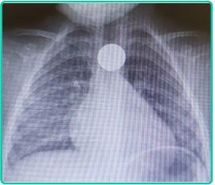
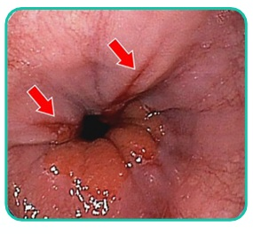
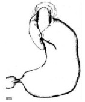
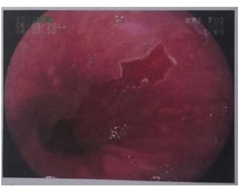
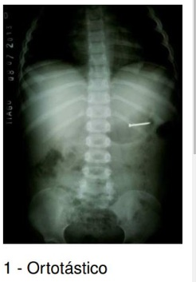
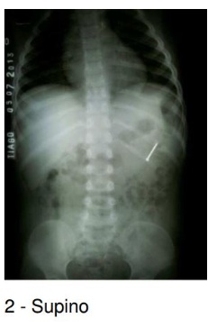

Questão 1 · Objetos não Traumáticos no Esôf ago · 4000130427A maioria das ingestões de corpos estranhos ocorrem em crianças entre 6 meses e 3 anos e qualquer caso deve ser considerado e investigado seriamente pelo risco de complicações. Sobre esta situação, analise as alternativas abaixo. I – O principal local de impactação é no esôfago proximal, ao nível cricofaríngeo. II – Moeda em esôfago requer retirada endoscópica de emergência. III – Uma vez no estômago 95% de todos os objetos ingeridos passam, sem dificuldade, pelo restante do trato digestivo. IV – A presença de um imã no estômago requer retirada urgente pelos riscos inerentes. Estão corretas as assertivas
A I e II apenas.
B I e III apenas.
C I, II e IV apenas.
D II, III e IV apenas.
E I, II, III e IV.
Questão 2 · Disf agia Esof ágica Disf agia de Condução · 4000129906Homem de 23 anos, refere quadro de re uxo gastroesofágico há anos, com uso de omeprazol 20mg eventualmente. Há um mês iniciou com disfagia ocasional a ingesta de carnes. Realizou endoscopia digestiva alta há 11 meses que revelou esofagite de re uxo grau C de Los Angeles, com pequena hérnia hiatal e H. pilory positivo. Usou medicação para erradicação do H. pilory. Está sem uso de medicação atualmente. A provável causa da disfagia é
A acalasia.
B leiomioma do esôfago distal.
C estenose péptica do esôfago.
D processo inflamatório esofágico.
E carcinoma epidermóide do esôfago.
Questão 3 · Objetos não Traumáticos no Esôf ago · Pediatria · 4000137315Júlio tem 2 anos e é levado pela mãe à emergência por choro, irritabilidade e desconforto cervical. Diante da radiogra a de tórax mostrada a seguir, qual seria a sua conduta?

A Trata-se de uma bateria impactada no esôfago, a conduta é a remoção imediata por endoscopia.
B Trata-se de uma moeda impactada no esôfago e deve ser retirada endoscopicamente porque o paciente está sintomático.
C Trata-se de um objeto arredondado e não traumático, podendo ser observado por 12 a 48 horas e removido apenas em caso de não migração.
D Devido ao tamanho do objeto, a remoção endoscópica está contraindicada, pelo risco de laceração do esfíncter superior do esôfago. Recomenda-se a retirada cirúrgica.
E Deve-se optar pela conduta menos invasiva, como a ingestão de óleo mineral ou xarope de lactulona, para que o objeto possa migrar para o estômago.
Questão 4 · Tratamento Clínico da DRGE · Indicações para o Tratamento Cirúrgico · 4000132098Indicações de Pesquisa e Tratamento Dalva tem 46 anos, obesidade e queixa-se de pirose, regurgitação e eructações frequentes, 3 a 4x por semana, nos últimos 2 anos, sem qualquer tratamento prévio. Endoscopia digestiva alta revela a imagem a seguir. Dalva tem hipotireoidismo e é alérgica a penicilina e iodo. Qual é a conduta para Dalva neste momento?

A Pesquisar e tratar
B Pesquisar e tratar
C IBP 40 mg ao dia, durante 6 a 8 semanas, e mudança dos hábitos de vida.
D Domperidona + bloqueador H2, controle do peso, fracionar as refeições e reduzir frituras.
E Vigilância endoscópica do esôfago de
Questão 5 · Métodos Complementares · Indicações para o Tratamento Cirúrgico · 4000127312Um paciente de 38 anos medindo 1,70m e pesando 72 kg, estava em acompanhamento clínico em unidade básica de saúde e foi referido a um serviço de cirurgia. O paciente relatou que há dois anos tem quadro de pirose retroesternal, mesmo em ortostase, com piora após as refeições, associado à disfonia intermitente, tosse seca e pigarro diário. Ao exame físico, apresentava somente leve desconforto à palpação profunda no epigastro. Relatava etilismo social e negava tabagismo. Ao longo desse período, fez uso de pantoprazol 40 mg e a endoscopia digestiva alta compatível com esofagite grau III de Savary-Miller. Foi solicitada, na atenção especializada, manometria esofágica que evidenciou hipotonia acentuada do esfíncter esofageano inferior e dismotilidade moderada do corpo esofágico. A pHmetria esofágica evidenciou registro na sonda proximal de 10 episódios de pH inferior a 4. Qual a conduta a ser proposta ao paciente?
A Sugerir a indicação de tratamento cirúrgico por meio de fundoplicatura vídeo-laparoscópica.
B Dobrar a dose do pantoprazol, associar medicação pró-cinética em dose plena ereforçar orientações dietéticas- comportamentais.
C Manter o tratamento clínico, associar medicação pró-cinética em dose plena e reforçarorientações dietéticas- comportamentais.
D Manter o tratamento clínico, reforçar orientações dietéticas-comportamentais eassociar tratamento endoscópico da dismotilidade.
Questão 6 · Manejo Terapêutico · Ingestão de Bases Fortes Esof agite Cáustica · 4000124928Assinale a alternativa incorreta com relação aos sintomas das lesões cáusticas do esôfago:
A Durante a primeira fase, os pacientes podem queixar-se de dor oral e subesternal, hiperssalivação, odinofagia e disfagia, hematêmese e vômito.
B Durante a fase 2, os sintomas podem desaparecer e apenas a disfagia reaparecer quando a fibrose e a cicatrização começam a estreitar o esôfago durante toda a fase 3.
C Dor na região dorsal e no tórax indicam uma perfuração do esôfago mediastinal, enquanto dor abdominal pode indicar perfuração de víscera abdominal.
D Sintomas de angústia respiratória, como rouquidão, estridor e dispneia, sugerem edema das vias aéreas superiores e são geralmente piores com a ingestão de álcalis.
Questão 7 · Tratamento Farmacológico · Endoscopia Digestiva Alta EDA · 4000120191Mulher de 52 anos apresenta queimação retroesternal e regurgitação há 5 anos, inicialmente cerca de 3 vezes na semana, e há 1 ano diariamente. O quadro é desencadeado minutos após a alimentação ou quando ca “estressada” e melhora com o uso de antiácidos, os quais utiliza sob demanda desde o início dos sintomas. Relata rouquidão recorrente há mais de 10 anos. AP: tabagismo ativo (20 anos-maço). Exame físico: IMC: 30,4 kg/m2, sem demais alterações. Além de orientações dietéticas e comportamentais, a conduta inicial mais adequada é
A prescrição de inibidor de bomba de prótons; pHmetria de 24 horas.
B prescrição de inibidor de bomba de prótons; endoscopia digestiva alta.
C manometria convencional; pHmetria de 24 horas.
D manometria alta resolução; endoscopia digestiva alta.
Revisar: possível letra faltando em enunciado
Questão 8 · Baterias no Esôf ago · 4000114886É CORRETO afirmar que está indicada a endoscopia digestiva alta imediata, para:
A Criança de 5 anos que engoliu uma moeda.
B Criança de 10 anos que engoliu uma bateria.
C Paciente idoso com hipertensão porta e hematêmese.
D Paciente com dor epigástrica que não melhora e com suspeita de úlcera duodenal.
Questão 9 · Tratamento Cirúrgico da DRGE · Cirurgia · 4000110050Em relação ao tratamento cirúrgico do paciente com doença do refluxo gastroesofágico, assinale a alternativa correta.
A A cirurgia piora os sintomas disfágicos em pacientes com estenoses secundárias à esofagite erosiva.
B O esôfago de Barrett apresenta regressão em 100% dos casos após o tratamento cirúrgico associado ao uso permanente de inibidores da bomba de prótons.
C A cirurgia reduz o risco de esofagite, esôfago de Barrett e displasia.
D A cirurgia não reduz a disfagia em pacientes com esofagite erosiva.
E A migração permanente da junção esofagogástrica e o tamanho da hérnia não interferem no prognóstico para o desenvolvimento do refluxo.
Questão 10 · Tratamento Cirúrgico da DRGE · Hérnia Hiatal por Deslizamento Tipo I · Cirurgia · 4000107703Mulher, 31 anos de idade, com queixa de pirose há cerca de 4 anos, com melhora após tratamento com 40mg de omeprazol ao dia. Mantém, no entanto, queixa importante de regurgitação e epigastralgia após se alimentar. Endoscopia digestiva alta mostra esofagite leve e hérnia de hiato, por deslizamento, de 4cm. Radiogra a contrastada do esôfago, estômago e duodeno revela hérnia de hiato, por deslizamento, de 4cm de extensão. Antecedentes pessoais: nega comorbidades, não faz uso regular de medicações, IMC = 27 kg/m². Assinale a alternativa correta.
A Cirurgia não deve ser indicada nesse momento, por se tratar de paciente com hérnia hiatal maior que 3cm.
B Considerando a boa resposta ao medicamento prescrito, deve-se manter omeprazol, dobrado a dosagem.
C A conduta para o caso deve ser Hiatoplastia com fundoplicatura por meio da técnica de Nissen.
D Deve ser indicada correção cirúrgica pela técnica de bypass gástrico em Y de Roux, uma vez que IMC > 25 kg/m², conforme evidências da literatura.
Questão 11 · Tratamento Farmacológico · 4000095485Paciente com queixas sugestivas de doença do re uxo gastroesofágico é tratado de forma empírica com inibidor da bomba de prótons. Submetido à endoscopia digestiva alta, o resultado foi normal. Nessa circunstância, a conduta a ser tomada é:
A manter o tratamento instituído empiricamente.
B realizar pHmetria de 24 horas.
C fazer esofagografia.
D fazer manometria esofágica.
E o tratamento instituído e repetir o exame endoscópico após três meses.
Questão 12 · Indicações para o Tratamento Cirúrgico · 4000083672A doença do re uxo gastroesofágico é comum, e o tratamento de eleição é medicamentoso, acompanhado de medidas comportamentais. Todavia, em algumas situações, o tratamento cirúrgico está indicado. Das alternativas abaixo, qual a que consiste em indicação cirúrgica absoluta?
A Alívio dos sintomas com inibidores de bomba de prótons.
B Pneumonia aspirativa de repetição.
C Esofagomanometria alterada.
D Dor torácica.
Questão 13 · Tratamento · Vigilância · Esôf ago de Barrett · 4000083489Homem, 57 anos, realizou Endoscopia Digestiva Alta (EDA) para avaliação de sintomas de epigastralgia e re uxo gastroesofágico, cujo resultado evidenciou esôfago de Barrett. Sobre essa condição, é correto afirmar que:
A Alterações como esôfago de Barrett não estão associadas a um aumento de desenvolvimento de adenocarcinoma de esôfago.
B Pacientes com esôfago de Barrett sem displasia devem ser submetidos a exames periódicos entre 3 a 5 anos ou se houver mudanças nos sintomas.
C Pacientes com esôfago de Barrett com displasia de alto grau confirmado pelo patologista devem ser ressubmetidos a nova EDA em até 2 anos.
D As técnicas ablativas de mucosa do esôfago de Barret como a ablação por radiofrequência vêm sendo fortemente desaconselhadas nos últimos anos.
Questão 14 · Vigilância · Esôf ago de Barrett · 4000079191Analise as afirmativas a seguir considerando a relação entre Esôfago de Barret e displasia, e assinale a alternativa CORRETA. I. Apesar de a acurácia e a con abilidade do diagnóstico histopatológico de displasia no Esôfago de Barret serem questionáveis, demonstrou-se que o grau de displasia é o fator preditivo isolado mais importante na avaliação do risco de adenocarcinoma invasivo na evolução do Esôfago de Barret. II. A frequência de displasia associada ao Esôfago de Barret ca ao redor de 10%, sendo observada apenas no epitélio metaplásico intestinal. III. Os pacientes com Esôfago de Barret associado à neoplasia intraepitelial de alto grau têm grande risco de apresentarem focos de adenocarcinoma e, nesses casos, erros de amostragem podem ocorrer mesmo com a realização de múltiplas biópsias. IV. Recomenda-se, para o rastreamento de câncer de esôfago em pacientes com Esôfago de Barret sem displasia identificável, a realização de exames endoscópicos a cada dois ou três anos.
A Apenas II, III e IV estão corretas.
B Apenas III e IV estão corretas.
C I, II, III e IV estão corretas.
D Apenas II e IV estão corretas.
E Nenhuma das alternativas anteriores.
Revisar: possível letra faltando em enunciado
Questão 15 · Tratamento Cirúrgico da DRGE · Hérnia Hiatal por Deslizamento Tipo I · Cirurgia · 4000078178Mulher de 45 anos com IMC = 28 kg/m² refere queixa de pirose e melhora após tratamento com 40 mg de omeprazol ao dia. No entanto, mantém queixa importante de regurgitação e crises de tosse frequente. A endoscopia digestiva alta mostra esofagite leve e hérnia de hiato por deslizamento de 3 cm e a radiogra a contrastada do esôfago, estômago e duodeno mostra hérnia de hiato por deslizamento de 4 cm de extensão. Assinale a alternativa CORRETA.
A Hiatoplastia com fundoplicatura é uma conduta adequada.
B Como o paciente apresentou boa resposta ao omeprazol não deve ser aventado o tratamento cirúrgico.
C Cirurgia não deve ser indicada nesse momento por se tratar de paciente com hérnia hiatal maior de 3 cm.
D Deve ser indicado by-pass gástrico em Y de Roux.
E Nenhuma das alternativas anteriores.
Questão 16 · Métodos Complementares · pHmetria de 24 horas e Impedância · 4000068157Qual o padrão-ouro para o diagnóstico e quantificação do refluxo gastroesofágico?
A Esofagografia.
B Endoscopia digestiva alta.
C Manometria esofagiana.
D pHmetria de 24 horas.
E Ultrassonografia endoscópica.
Questão 17 · Fatores de Fisco · Vigilância · Indicações para o Tratamento Cirúrgico · 4000053323Paciente com queixa de pirose e regurgitação há longo prazo, realiza uma endoscopia digestiva alta que mostra uma extensa área de epitelização colunar do esôfago distal, sendo retirados diversos fragmentos deste tecido para análise anátomo patológica. Em relação a este caso clínico, analise as assertivas abaixo. I) O principal fator de risco para esta patologia é a infecção pelo Helicobacter pylori e o uso crônico de inibidor da bomba de próton. II) Um resultado anátomo patológico mostrando displasia de alta grau indica a realização de operação antirrefluxo. III) Se o resultado mostrar um displasia de baixo grau para este paciente, uma nova endoscopia deve ser realizada em 6 meses a um ano. IV) A presença deste achado endoscópico e a identi cação de metaplasia intestinal no exame anátomo patológico define este paciente como portador de esôfago de Barrett. Estão corretas as assertivas:
A I e II apenas.
B II e IV apenas.
C III e IV apenas.
D I, II e III apenas.
E Todas assertivas estão corretas.
Questão 18 · Fatores de Fisco · Esôf ago de Barrett · Def inição · 4000050247Em relação ao diagnóstico de esôfago de Barrett, assinale a alternativa correta.
A A principal causa esôfago de Barrett é o refluxo alcalino ao esôfago distal.
B O epitélio do esôfago distal é substituído por epitélio juncional.
C A incidência de adenocarcinoma de esôfago é elevada no paciente que apresenta esôfago de Barrett.
D Pacientes submetidos a tratamento cirúrgico da DRGE irão apresentar regressão da metaplasia.
E A presença de displasia na biópsia indica aumento do risco de adenocarcinoma.
Questão 19 · pHmetria de 24 horas e Impedância · 4000050233Paciente masculino, 57 anos de idade, apresenta queixas de queimação retroesternal, referindo por vezes regurgitação. Com a suspeita de doença do re uxo gastroesofageano (DRGE), o exame considerado padrão-ouro para a confirmação diagnóstica é:
A raios x contrastado de esôfago.
B pH metria de 24 horas.
C esofagomanometria.
D endoscopia digestiva alta.
E tomografia computadorizada de abdome superior.
Questão 20 · Fatores de Fisco · Vigilância · Def inição · 4000048976Quanto ao diagnóstico endoscópico e histopatológico do Esôfago de Barrett, analise as assertivas a seguir e assinale a resposta CORRETA. I. O Esôfago de Barrett corresponde ao seguimento de mucosa colunar entre a extremidade proximal das pregas gástricas e o final da junção escamocolunar. II. O achado de Esôfago de Barrett é encontrado em aproximadamente 2% dos pacientes submetidos à EDA e em 15% dos pacientes com sintomas de DRGE. III. Biópsias do esôfago distal com epitélio cárdico e fúndico diagnosticam definitivamente o Esôfago de Barrett e estão associadas à adenocarcinoma. IV. Se o exame endoscópico sugerir fortemente o diagnóstico de Esôfago de Barrett, mas a biópsia não demonstrar epitélio colunar especializado, sugere-se o diagnóstico e recomenda-se nova avaliação com biópsias.
A Somente II, III e IV estão corretas.
B Somente I e III estão corretas.
C Somente II e III estão corretas.
D Somente II está correta.
E Somente II e IV estão corretas.
Questão 21 · Esof agite Corrosiva · 4000047281Assinale a alternativa incorreta com relação aos sintomas das lesões cáusticas do esôfago:
A Durante a primeira fase, os pacientes podem queixar-se de dor oral e subesternal, hiperssalivação, odinofagia e disfagia, hematêmese e vômito.
B Durante a fase 2, os sintomas podem desaparecer e apenas a disfagia reaparecer quando a fibrose e a cicatrização começam a estreitar o esôfago durante toda a fase 3.
C Dor na região dorsal e no tórax indicam uma perfuração do esôfago mediastinal, enquanto dor abdominal pode indicar perfuração de víscera abdominal.
D Sintomas de angústia respiratória, como rouquidão, estridor e dispneia, sugerem edema das vias aéreas superiores e são geralmente piores com a ingestão de álcalis.
Questão 22 · Medidas Comportamentais · Métodos Complementares · Tratamento Farmacológico · 4000046842Paciente do sexo masculino, 68 anos, procura atendimento médico devido queixas dispépticas, referindo ainda pirose frequente com náuseas, com piora após as refeições mais copiosas. Ao ser questionado refere que os sintomas vêm ocorrendo uma a duas vezes por semana nos últimos 4 meses, acrescentando ainda que no último mês passou a evoluir com desconforto na deglutição. Não é etilista nem tabagista, nega febre, perda ponderal, vômitos ou alterações do apetite; mantém suas atividades rotineiras sem di culdades. Considerando um diagnóstico de Doença do Re uxo Gastroesofágico, a conduta correta deve ser:
A uma vez que o paciente apresenta sintomas leves e com baixa frequência de ocorrência, deve-se orientar modificações de estilo de vida (evitar deitar-se após alimentações, elevar a cabeceira da cama, reduzir cafeína e alimentos gordurosos, perda de peso, entre outras) e reavaliar o quadro em 4 semanas.
B devido baixa frequência e intensidade das queixas deve-se iniciar antagonista do receptor H2 por 3 MESES, com reavaliação posterior ou em caso de piora clínica.
C a presença de fatores de risco sustenta a realização de endoscopia digestiva alta logo no início do seguimento.
D considerando sintomas leves e de baixa periodicidade deve-se iniciar IBP em dose padrão e reavaliar o caso em 4 semanas; caso não haja melhora, ou ocorra retorno dos sintomas após suspensão da medicação deve-se realizar endoscopia digestiva.
E considerando os fatores de risco envolvidos no caso é mandatória a realização de pHmetria esofágica, visando diagnóstico rápido e definitivo.
Questão 23 · Sintomas Atípicos · Indicações para o Tratamento Cirúrgico · Tratamento Farmacológico · 4000046836Homem, 31 anos, IMC: 33Kg/m², refere sensação de regurgitação amarga, pirose e rouquidão há 2 meses. Relata ainda salivação frequente, pigarro e dor de ouvido. Durante consulta cirúrgica para tratamento de doença de re uxo, foi avaliada a presença de sintomas esofágicos típicos, atípicos e sinais de alarme. Em relação a esse quadro, é CORRETO afirmar que
A existem sintomas clássicos de hérnia hiatal.
B existe um sintoma de alarme e devemos fazer endoscopia.
C existem 02 sintomas atípicos.
D não existe sinal de alarme e devemos proceder com o tratamento clínico.
E devido à predominância de sinais típicos, devemos indicar cirurgia antirrefluxo.
Questão 24 · Indicações para o Tratamento Cirúrgico · Inibidores da Bomba de Prótons IBP · 4000045877Um paciente de 46 anos, sexo masculino, procurou otorrinolaringologista devido à queixa de rouquidão matutina, odinofagia e tosse seca, principalmente à noite. O médico realizou naso brolaringoscopia com achados que acreditou estarem relacionados à doença do re uxo gastroesofágico (DRGE) e encaminhou ao ambulatório de cirurgia geral para avaliação. Paciente nega regurgitação, perda do apetite, hiporexia. Não faz uso de qualquer medicação adicional. Foi solicitada endoscopia digestiva alta, que mostrou gastrite enantematosa moderada sem outras alterações dignas de nota. Sobre o caso, assinale a conduta adequada.
A Deve-se realizar contrarreferência e encaminhar o paciente de volta ao otorrinolaringologista, pois está descartado o diagnóstico de DRGE.
B Deve-se considerar o diagnóstico de DRGE e, nesse caso, é possível iniciar tratamento com inibidor de bomba de prótons e procinéticos e observar a evolução nas próximas semanas.
C Deve-se considerar o diagnóstico de DRGE e, nesse caso, o paciente tem indicação de tratamento cirúrgico.
D Deve-se solicitar pHmetria de 24 horas e, se confirmada DRGE, o paciente tem indicação de tratamento cirúrgico.
Questão 25 · Ingestão de Bases Fortes Esof agite Cáustica · 4000042509Assinale a alternativa incorreta com relação à ingestão de álcali:
A A fase de ulceração e granulação começa cinco a sete dias após a lesão e dura de três a 12 dias.
B A fase necrótica dura de um a quatro dias após a lesão, durante a qual a coagulação de proteínas intracelulares resulta em necrose celular.
C A parede do esôfago está bastante enfraquecida durante a fase de ulceração e granulação.
D Na terceira fase, começa a cicatrização e o tecido conjuntivo recém-formado começa a contrair, resultando em estreitamento do esôfago.
Questão 26 · Tratamento · Vigilância · 4000041710V.C.X., feminino, 39 anos, com diagnóstico prévio de doença do re uxo gastroesofágico há 10 anos, inicialmente com sintomas 3-4x/semana, com melhora completa dos sintomas após tratamento com inibidores de bomba de prótons (IBP). Durante endoscopia digestiva alta realizada de controle de esofagite erosiva, foi evidenciado mucosa esofágica distal de cor rósea, de cerca de 02 cm de extensão e realizado múltiplas biópsias que evidenciaram metaplasia intestinal sem sinais de displasia. No momento paciente com controle adequado de sintomas com IBP. Diante do quadro, qual a recomendação para a paciente?
A Fundoplicatura a Nissen.
B Ressecção endoscópica.
C Ablação endoscópica.
D Repetir endoscopia a cada 3 a 5 anos.
Questão 27 · Tratamento Clínico da DRGE · Classif icação de Los Angeles · 4000039425Paciente 23 anos, obesa, há 2 meses com pirose e regurgitação. Realizada endoscopia que evidenciou esofagite erosiva grau B de Los Angeles. A melhor opção terapêutica para o caso é
A antagonista receptor H1.
B inibidor bomba de prótons.
C procinético.
D antiácido.
Questão 28 · Tratamento Cirúrgico da DRGE · Cirurgia · 4000039184A figura abaixo ilustra o tratamento clássico de uma das patologias mais comuns do trato gastrointestinal em que se realiza uma válvula na transição esofagogástrica, posterior, de 360°, utilizando o fundo gástrico. Trata-se da opção cirúrgica clássica para o tratamento de:

A Acalasia.
B Divertículo de Zenker.
C Doença do Refluxo Gastroesofágico.
D Adenocarcinoma de Transição Esofagogástrica.
Questão 29 · Baterias no Esôf ago · Sintomas e Investigação Diagnóstica · Ingestão de Corpo Estranho · 4000036311Das alternativas abaixo qual NÃO se enquadra nas patologias do esôfago:
A Exames de alta complexidade como tomografia ou ressonância não necessariamente são mandatórios na avaliação inicial de ingestão de corpo estranho (CE), que não está restrita somente a crianças. Neste contexto, a radiografia simples pode evidenciar material radiopaco no trajeto e descartar perfurações. No contexto de CE esofágico, a remoção urgente deve ser realizada na presença de sintomas respiratórios ou sialorréia.
B Remoção de pilhas e baterias é mandatória de imediato, mesmo caso já tenham alcançado o estômago, independente do tamanho, pelo risco de estenose e perfuração e o mesmo se aplica à ingestão de pacotes de cocaína.
C A cardiomiotomia anterior, associada à fundoplicatura em 3 planos, atualmente é a prática mais utilizada para tratamento da acalásia inicial e megaesôfagos não avançados.
D Urgências oncológicas no câncer de esôfago geralmente se manifestam por sangramentos, perfurações e obstrução e geralmente o tratamento cirúrgico definitivo para a doença não é indicado como abordagem inicial.
Questão 30 · Tratamento Cirúrgico da DRGE · 4000030111O procedimento operatório de escolha para a maioria dos pacientes no tratamento cirúrgico de doença do re uxo gastroesofágico é:
A Hiatoplastia.
B Piloroplastia.
C Esofagopexia.
D Reparo livre de tensão através da aplicação de tela sintética.
E Abordagem pelo pilar esquerdo para confecção de uma válvula de 360 graus.
Questão 31 · Estenose Péptica · Disf agia Esof ágica Disf agia de Condução · 4000025901Paciente do sexo masculino, de 50 anos, obeso, procedente de Barreiras-BA, apresentando disfagia intermitente com alimentos sólidos há seis meses. Relatava ainda pirose retroesternal frequente há seis anos. Neste caso, o diagnóstico mais provável é:
A síndrome de Plummer-Vinson.
B divertículo de Zenker.
C megaesôfago chagásico.
D estenose péptica de esôfago.
Questão 32 · Métodos Complementares · Indicações para o Tratamento Cirúrgico · 4000022809Paciente diagnosticado pela endoscopia digestiva alta: esofagite grau A de Los Angeles, hiato esofagiano alargado e transição esôfago gástrica 3 cm acima do pinçamento diafragmático. Melhora com uso de inibidores de bomba de prótons, medidas posturais e dietéticas, mas ao término dos tratamentos apresenta recidiva precoce dos sintomas. Qual sua conduta?
A Solicitar Manometria Esofágica e caso normal indicar tratamento cirúrgico
B Solicitar Phmetria Esofágica e caso anormal indicar tratamento cirúrgico
C Solicitar esofagografia e caso confirme o diagnóstico indicar tratamento cirúrgico
D Indicar tratamento cirúrgico
Questão 33 · Esôf ago de Barrett · 4000013201A respeito da doença de refluxo gastroesofágico (DRGE) e da estenose péptica do esôfago distal, julgue o item seguinte. O esôfago de Barrett, condição clínica associada à complicação da DRGE, predispõe a pessoa a carcinoma epidermoide do esôfago distal.
A Certo.
B Errado.
Questão 34 · Esof agite Eosinof ílica · Endoscopia Digestiva Alta EDA · 4000008118A esofagite ocorre quando há um desequilíbrio entre os mecanismos de agressão e de defesa da mucosa esofágica. Em relação a esta patologia na criança, é CORRETO dizer que:
A A biópsia esofágica está indicada em todos os pacientes pediátricos, encaminhados para a avaliação endoscópica com suspeita de esofagite, pois ela pode ocorrer mesmo na ausência de alterações macroscópicas.
B Os achados histológicos de hiperplasia da zona basal e dilatação dos espaços intercelulares são suficientemente sensíveis e específicos para diagnosticar esofagite de refluxo.
C Uma das grandes preocupações da criança, menor de 2 anos com doença do refluxo gastroesofágico, é o “esôfago de Barrett”, caracterizada por metaplasia gástrica, com epitélio colunar e com prevalência mais alta nesta faixa etária.
D A esofagite eosinofílica é uma consequência da doença do refluxo gastroesofágico e, diferentemente da esofagite ácida, a ação de antígenos alimentares não participa de sua etiopatogênese.
E A esofagite eosinofílica apresenta melhor resposta terapêutica aos inibidores de bomba de prótons do que aos inibidores de receptores histamínicos H2.
Questão 35 · Tratamento Cirúrgico da DRGE · Gastroenterologia · Cirurgia · 4000003501A fundoplicatura de Nissen é um procedimento cirúrgico utilizado para tratamento de:
A dolicomegaesôfago.
B atresia duodenal.
C gastrite alcalina.
D doença do refluxo gastroesofágico.
Questão 36 · Tratamento Cirúrgico da DRGE · Gastroenterologia · Cirurgia · 4000001073A técnica cirúrgica para correção de doença do re uxo gastroesofágico que originalmente há abordagem intra-torácica e abdominal é:
A Nissen
B Lindi
C Toupet
D Belsey-Mark IV
Questão 37 · Obstrução Total do Esôf ago · Baterias no Esôf ago · Objetos Perf urocortantes no Esôf ago · 4000123321Em relação à realização de endoscopia digestiva alta (EDA) em pacientes com corpo estranho no esôfago, assinale a opção correta.
A Em pacientes com baterias impactadas no esôfago, o exame dever ser imediato.
B Em objetos pontiagudos impactados no esôfago, a EDA poderá ser realizada após 24 horas.
C Em pacientes assintomáticos, com moedas no esôfago, dever ser realizada em 72 horas.
D Em pacientes com bolo alimentar impactado em ímãs no estômago, a EDA poderá ser realizada em até 72 horas.
E Não se deve realizar EDA em pacientes com corpo estranho no esôfago.
Questão 38 · Tratamento Farmacológico · 4000113501Qual das seguintes abordagens é a mais apropriada para uma mulher de 35 anos, com IMC = 30 Kg/m2, que refere sensação de queimação retroesternal, piora com a ingesta de alimentos e com o decúbito dorsal, e que não está respondendo ao uso de omeprazol 20 mg duas vezes ao dia, após as refeições?
A Solicitar pHmetria esofágica.
B Solicitar ECG e teste ergométrico.
C Orientar a tomar o omeprazol 30 minutos antes das refeições.
D Solicitar endoscopia digestiva alta.
E Substituir omeprazol por pantoprazol.
Questão 39 · Ingestão de Corpo Estranho · 4000107810São consequências da permanência de corpo estranho no esôfago, EXCETO:
A Ocorrência de edema.
B Compressão da traqueia.
C Aumento da pressão intracraniana.
D Sintomas respiratórios.
Questão 40 · Ingestão de Bases Fortes Esof agite Cáustica · 4000105800Criança de 6 anos tomou soda cáustica que estava guardada em garrafa de guaraná. Criança chega no pronto-socorro 30 minutos após a ingestão. Ao exame físico, apresenta-se irritada, chorosa e com hiperemia de orofaringe. O tratamento inicial mais adequado é:
A Antibioticoterapia.
B Corticosteroides.
C lavagem gástrica.
D Inibidores de bomba de prótons.
E Carvão ativado.
Questão 41 · Fisiopatologia e Fatores de Risco · 4000100637Na obesidade, quando o índice de massa corporal (IMC) é maior que 29,9Kg/m², está bem estabelecida a relação com doença do refluxo gastroesofágico (DRGE). As causas desta doença ser agravada em pacientes obesos deve-se:
A À diminuição da pressão do esfíncter inferior do esôfago (EIE), aumento dos episódiosde relaxamento transitório do EIE, diminuição do clareamento esofágico e diminuição da velocidade de esvaziamento gástrico; presença de hérnia de hiato.
B À resistência insulínica aumentada, levando ao surgimento de Diabetes Mellitus, quecausa gastroparesia e consequente diminuição da velocidade do esvaziamento gástrico.
C À resistência insulínica aumentada, aumento da pressão intra-abdominal, presença dehérnia de hiato, esofagite erosiva e regurgitação noturna.
D O refluxo gastroesofágico (RGE) ocorre somente em pacientes com IMC maior que 40Kg/m². Em pacientes com IMC entre 29,9 e 34,9 Kg/m², é rara a ocorrência do RGE.
Questão 42 · Baterias no Esôf ago · 4000097939Menina, 5a, é trazida ao Serviço de Emergência com história de ingestão de um pedaço de brinquedo há 3 horas. Mãe nega vômitos ou salivação excessiva. Radiograma de tórax e abdome: presença de imagem de duplo halo em terço proximal de esôfago. A CONDUTA É:
A Endoscopia digestiva alta.
B Acompanhamento radiológico a cada 72 horas.
C Uso de droga procinética via parenteral.
D Expectante até 120 horas pós ingestão.
Questão 43 · Tratamento · Vigilância · Tratamento Cirúrgico da DRGE · 4000096800Sobre o esôfago de Barrett responda:
A Correspondente ao grau V de Savary-Miller, esta afecção necessita de tratamento cirúrgico com regressão quase total da mesma após cirurgia.
B Confirmação diagnóstica se faz pelo aspecto endoscópico de vermelho-salmão pela endoscopia digestiva alta.
C Na presença de displasia de baixo grau associada ao diagnóstico de Barrett, o paciente deverá ser submetido a controle endoscópico de 2/2 anos.
D A cirurgia para tratamento de refluxo tem efeito comprovadamente protetor contra aparecimento de adenocarcinoma de cárdia.
E Nda.
Questão 44 · Fisiopatologia e Fatores de Risco · 4000095605A doença do re uxo gastroesofágico (DRGE) é um problema de elevada prevalência no Brasil. Assinale a alternativa que representa o mecanismo mais comum do refluxo gastroesofágico pós-prandial.
A Infecção pelo Helicobacter pylori.
B Presença de hérnia hiatal.
C Tempo de esvaziamento gástrico reduzido.
D Relaxamento transitório do esfíncter esofágico inferior.
E Hipotonia do esfíncter esofágico inferior.
Questão 45 · Tratamento Cirúrgico da DRGE · Indicações para o Tratamento Cirúrgico · 4000091405pHmetria de 24 horas e Impedância Em relação à doença do refluxo gastroesofagiano, assinale a alternativa correta.
A O principal exame diagnóstico é a pHmetria esofágica de 24 horas.
B A técnica cirúrgica de escolha é a fundoplicatura de D’Or ou parcial posterior.
C Em pacientes com presença de esôfago de Barret está indicada a esofagectomia.
D A endoscopia digestiva alta mostrando uma hérnia hiatal é essencial no diagnóstico da doença do refluxo gastroesofagiano.
E Quando existir estenose péptica do esôfago está contraindicada a fundoplicatura.
Questão 46 · Tratamento · Vigilância · Tratamento Cirúrgico da DRGE · 4000084281Assinale a alternativa que responde CORRETAMENTE à pergunta abaixo. Um homem de 65 anos de idade, em bom estado geral, apresenta queimor retroesternal persistente apesar de terapia medicamentosa antirre uxo agressiva. A esofagoscopia revela a presença de epitélio colunar no esôfago distal de 6 cm de extensão; a biópsia revelou displasia de alto grau em múltiplos fragmentos. Qual é a melhor opção de conduta?
A Terapia medicamentosa continuada.
B Acompanhamento com esofagoscopia e biópsia em um ano.
C Cirurgia antirrefluxo.
D Acompanhamento com esofagoscopia e biópsia em três meses.
E Esofagectomia e recontrução do trânsito alimentar.
Questão 47 · Síndrome de Polipose Adenomatosa Hereditária · Diagnóstico e Classif icação das Úlceras · 4000080674Tratamento Endoscopia digestiva alta é indicada para todas as condições, EXCETO:
A Um homem de 62 anos de idade com uma úlcera gástrica tratada há 30 dias, tem necessidade de repetir o exame de endoscopia.
B Uma mulher de 26 anos de idade, HIV-positiva, com odinofagia.
C Um homem de 32 anos de idade, com polipose adenomatosa familiar de diagnóstico recente.
D Uma mulher de 65 anos de idade sem ruídos intestinais, com abdome rígido, descompressão dolorosa e com história pregressa de úlcera péptica.
Questão 48 · Esof agite Eosinof ílica · 4000078311Escolar, nove anos, masculino, há um mês vem apresentando episódios de vômitos e dor abdominal persistente. Após alguns exames para investigação, foi realizado endoscopia digestiva alta, com a histopatologia das biopsias mostrando mais de 15 eosinó los por campo de grande aumento (nos fragmentos obtidos no esôfago distal). Nesse caso, a medicação a ser feita no primeiro momento é:
A Omeprazol.
B Budesonida tópica deglutida.
C Nistatina.
D Prednisolona.
E Montelucaste.
Questão 49 · Tratamento Cirúrgico da DRGE · Cirurgia · 4000068016Dentre as alternativas a seguir, a complicação intraoperatória mais comum em pacientes submetidos a fundoplicatura para tratamento de refluxo gastroesofágico por via laparoscópica é conhecida como:
A hematoma subcapsular do fígado.
B laceração hepatica.
C laceração esplênica.
D lesão do fundo gástrico.
E pneumotórax.
Questão 50 · Manometria Esof ágica · Métodos Complementares · 4000065414Dentre os exames abaixo, aquele considerado padrão ouro para o diagnóstico e quanti cação do re uxo ácido na doença do refluxo gastroesofágico (DRGE) é a
A endoscopia digestiva alta.
B ultrassonografia endoscópica.
C seriografia
D pHmetria de 24 horas.
E esofagomanometria.
Questão 51 · Tratamento Cirúrgico da DRGE · Indicações para o Tratamento Cirúrgico · Esof agite Péptica · 4000054505Em relação à doença do refluxo gastroesofágico, assinale a alternativa correta.
A A detecção de esofagite erosiva na endoscopia é necessária para a realização do diagnóstico.
B Os componentes lesivos do refluxo são o ácido, a pepsina, a secreção pancreática e a secreção biliar.
C O esôfago de Barrett é definido pela presença de displasia na mucosa do esôfago.
D A primeira opção de tratamento é a cirurgia.
E O tratamento cirúrgico, quando indicado, é a gastrectomia.
Questão 52 · Sintomas Típicos · Inibidores da Bomba de Prótons IBP · 4000049037Um paciente de 33 anos de idade apresenta pirose há três meses, principalmente após a ingestão de frituras e ácidos. Faz uso de antiácidos esporadicamente, com alívio dos sintomas. Nega disfagia ou dor torácica. Ao exame, encontra-se em bom estado geral, corado, hidratado, com abdome plano, flácido e indolor. Com base nesse caso hipotético, assinale a alternativa que apresenta a melhor conduta no momento
A realizar pHmetria e manometria esofágica
B realizar estudo contrastado do esôfago
C introduzir ranitidina 150 mg 1x/dia por um mês
D tratar empiricamente o H. pylori
E omeprazol 40 mg 1x/dia por dois meses
Questão 53 · Métodos Complementares · 4000041907Qual o exame complementar considerado padrão-ouro para o diagnóstico de doença do refluxo gastroesofágico?
A pHmetria.
B Endoscopia digestiva alta.
C Esofagomanometria.
D Raio X contrastado do esôfago.
Questão 54 · Manif estações Clínicas · 4000041180Com relação aos sintomas da doença do refluxo gastroesofágico (DRGE), assinale a alternativa INCORRETA:
A A azia da DRGE não é restrita às áreas epigástricas e retroesternal e pode irradiar para as costas.
B A presença de regurgitação indica progressão da doença.
C Quando um paciente apresenta disfagia, a estenose péptica do esôfago distal é provavelmente a causa.
D A presença de alimentos não digeridos no conteúdo regurgitado em pacientes com DRGE são indicativos de um outro processo patológico, como um divertículo esofágico ou acalasia.
Questão 55 · Tratamento Cirúrgico da DRGE · Cirurgia · 4000036533A técnica cirúrgica do re uxo gastroesofágico com acesso pelo pilar esquerdo para confecção de uma válvula de 360 graus é denominada:
A Fundoplicatura à Toupet.
B Fundoplicatura à Dor.
C Fundoplicatura à Nissen.
D Fundoplicatura à Lind.
Questão 56 · Def inição · 4000033999O esôfago de Barret é uma condição pré-maligna associada à doença do re uxo gastroesofágico, que se define como a presença de epitélio colunar no esôfago distal. Essa alteração é conhecida por:
A Metaplasia intestinal.
B metaplastia esofágica.
C Displasia esofágica.
D Displasia intestinal.
Questão 57 · Esôf ago de Barrett · 4000024661O esôfago de Barrett tem sido foco de atenção em função do aumento da obesidade na população mundial. Esta afecção :
A tem como causa, em proporções iguais, o refluxo ácido e o não ácido.
B é causado pelo refluxo ácido em proporção maior que o não ácido.
C é causado pelo refluxo não ácido em proporção maior que o ácido.
D tem relação com infecções virais e não com o refluxo gastroesofágico.
Questão 58 · Manejo Terapêutico · Ingestão de Bases Fortes Esof agite Cáustica · 4000024581A propedêutica endoscópica em casos de ingesta de substância cáustica deve ser :
A precedida de radiografia do esôfago com contraste iodado.
B posterior às primeiras 48 horas pelo risco aumentado de perfuração esofágica precoce.
C precoce pelo risco aumentado de perfuração esofágica após as primeiras 48 horas.
D precedida de radiografia do esôfago com contraste baritado.
Questão 59 · Tratamento · Esof agite Eosinof ílica · História Clínica e Achados Endoscópicos · 4000024519Com relação a esofagite eosinofílica é CORRETO afirmar que:
A O principal exame para o diagnóstico é o esofagograma.
B É mais frequente em mulheres acima dos 60 anos.
C O tratamento principal é o uso de corticoide venoso em altas doses.
D Não tem relação com alergias alimentares, respiratórias ou cutâneas.
E Os sintomas mais comuns em adultos são disfagia e impactação alimentar.
Questão 60 · Esôf ago de Barrett · pHmetria de 24 horas e Impedância · Doença do Ref luxo Gastroesof ágico DRGE · 4000023051Sobre a Doença do Refluxo Gastroesofágico, assinale a alternativa INCORRETA:
A A pHmetria de 24h é considerado o exame padrão-ouro no diagnóstico da DRGE.
B O esôfago de Barrett corresponde à classificação IV de Savary-Miller.
C O esôfago de Barrett é caracterizado por uma substituição do epitélio escamoso estratificado por epitélio colunar.
D O H. pylori não está associado à DRGE.
Questão 61 · Baterias no Esôf ago · 4000020511Consiste em indicação de endoscopia digestiva alta (EDA) de emergência no paciente pediátrico:
A bateria localizada no esôfago.
B bateria localizada no estômago há 12 horas, em paciente assintomático.
C objetos pontiagudos localizados no estômago ou duodeno.
D nenhuma das situações acima indica EDA de emergência.
E as situações A, B e C indicam EDA de emergência.
Questão 62 · Esof agite Corrosiva · 4000016490Paciente psiquiátrico ingeriu substância cáustica como tentativa de autoextermínio. Foi solicitada uma endoscopia na urgência que apresentou ulcerações profundas no esôfago. Para diagnóstico de conduta desse caso clínico, assinale a alternativa CORRETA:
A A endoscopia deveria ter sido evitada para diminuir risco de perfuração.
B A classificação de Zargar seria de 2b, o que pode orientar o tratamento adequado.
C A ingestão de ácidos causa mais lesões no esôfago do que no estômago.
D A sondagem nasogástrica está contraindicada.
Questão 63 · Indicações para o Tratamento Cirúrgico · Esôf ago de Barrett · 4000011952Sobre o esôfago de Barrett, assinale a alternativa INCORRETA:
A 40% dos pacientes com refluxo gastroesofágico desenvolvem o esôfago de Barrett.
B A Metaplasia Intestinal incompleta que ocorre no esôfago de Barrett inclui células gástricas superficiais, células caliciformes intestinais e células absortivas intestinais.
C A ressecção esofágica é recomendada para pacientes com displasia de alto grau. A esofagectomia subtotal transhiatal é recomendada para maioria dos pacientes.
D Pacientes com esôfago de Barrett tem risco 40 vezes maior de desenvolver carcinoma esofágico.
Questão 64 · Fatores de Fisco · Tratamento · Vigilância · 4000003475Paciente do sexo feminino, 46 anos, vem à avaliação médica com história de pirose há muitos anos, frequentemente associada a alimentação copiosa rica em gordura, refrigerantes e café. Controla a sintomatologia com chás caseiros, hidróxido de alumínio e antiácidos efervescentes. Foi submetida a endoscopia digestiva alta que evidenciou áreas de epitélio avermelhado em esôfago distal, medindo 5cm acima da linha Z. A biópsia revelou tratar-se de metaplasia colunar e áreas de displasia de alto grau. Qual das seguintes orientações a esta paciente é inadequada?
A A senhora apresenta um quadro de doença do refluxo gastroesofágico bastante complicada que se não for tratado adequadamente pode evoluir para um câncer.
B As chances dessa metaplasia no esôfago que apareceu na sua endoscopia melhorar apenas com remédios é muito baixa.
C Seu exame demostra que a cirurgia de fundoplicatura evitará que a sua lesão do esôfago se transforme em câncer.
D A senhora tem indicação de tratamento cirúrgico, mas antes deveremos iniciar tratamento com medicações em dose máxima por 3 meses e repetir a endoscopia para ver se a displasia melhorou.
Questão 65 · Esôf ago de Barrett · 4000128239Em relação ao esôfago de Barrett, assinale alternativa ERRADA:
A A degeneração maligna geralmente se dá para adenocarcinoma.
B As células metaplásicas são mais resistentes à lesão proveniente do refluxo, porém são mais suscetíveis à malignização.
C As cirurgias antirrefluxos não interferem no estágio da metaplasia já instalada.
D Ocorre substituição do epitélio escamoso estratificado pelo epitélio colunar intestinal.
Questão 66 · Mecanismo de Ação dos IBPs · Esôf ago de Barrett · Adenocarcinoma de Esôf ago · 4000124477Assinale a assertiva INCORRETA sobre Doença do Refluxo Gastroesofágico (DRGE):
A Pode estar associada à dispneia, tosse, erosões dentárias, disfonia e disfagia.
B Os inibidores da bomba de prótons podem estar associados a maior risco de fraturas, infecções, má absorção de vitaminas e minerais e demência, sendo recomendado seu uso judicioso.
C Os inibidores da bomba de prótons têm como mecanismo de ação a reconstituição da barreira esofagogástrica, reduzindo a ocorrência de refluxo do conteúdo gástrico para a luz esofágica.
D Apesar do amplo uso dos inibidores da bomba de prótons e de sua alta eficiência em controlar sintomas e cicatrizar a esofagite erosiva, adenocarcinoma de esôfago tem mostrado significativo aumento de incidência nas últimas décadas em diversos países do Ocidente.
E Cerca de 10% dos pacientes com DRGE poderão desenvolver esôfago de Barrett ao longo de sua evolução, mesmo sob tratamento clínico adequado.
Questão 67 · Tratamento Cirúrgico da DRGE · Cirurgia · 4000120395Qual das seguintes opções não é um dos cinco princípios de correção cirúrgica do refluxo gastroesofágico?
A A fundoplicatura não deve aumentar a resistência além do que o peristaltismo do esôfago consegue vencer (válvula de aproximadamente 2cm).
B Uma extensão adequada de esôfago intra- abdominal deve ser obtida (aproximadamente 2cm).
C A operação deve restaurar a pressão do EEI para 10 vezes a pressão intragástrica em repouso.
D A fundoplicatura preferencialmente deve ser mantida no abdome.
E Na realização da válvula antirrefluxo, deve-se fazer um molde para o esôfago.
Questão 68 · Métodos Complementares · Sintomas Atípicos · Sintomas Típicos · 4000118076Assinale a alternativa CORRETA:
A A endoscopia digestiva alta normal exclui o diagnóstico de doença do refluxo gastroesofágico.
B O esôfago de Barrett à endoscopia é um achado frequente na doença do refluxo gastroesofágico, sem significado clínico e não requer atenção.
C O Helicobacter pylori está associado à doença do refluxo gastroesofágico.
D A doença do refluxo gastroesofágico pode ter manifestações extradigestivas como a tosse crônica predominantemente noturna, rouquidão e broncoespasmo.
Questão 69 · Tratamento · 4000099732Paciente masculino, previamente hígido, de 44 anos, com queixa de disfagia há 3 meses, associada à impactação alimentar há 1 mês. Em uso de omeprazol 20 mg de 12/12 horas há 15 dias, porém, sem melhora considerável dos sintomas. Refere perda de peso de 2 kg no período, sem outras queixas. Consultou médico, que solicitou uma endoscopia digestiva alta, que foi realizada com biópsias e houve confirmação histológica do diagnóstico de esofagite eosinofílica.
A Corticoide tópico associado a imunossupressor via oral.
B Internação para aplicação de corticoides via intravenosa, associado a inibidor de bomba protônica, também por via intravenosa.
C Eliminação empírica da dieta dos seis alimentos alergênicos mais comuns (leite, soja, trigo, ovo, amendoim e peixes/crustáceos) associada a corticoide tópico e inibidor de bomba protônica.
D Anti-histamínico via oral, associado a imunossupressor, preferencialmente, azatioprina.
Questão 70 · Complicações · 4000098911Paciente de 65 anos relata que começou a apresentar disfagia esofagiana a aproximadamente três meses, de caráter contínuo e sem fatores de melhora. Tem histórico de tratamento de doença do re uxo gastresofagiano (DRGE) de longa data e sem epidemiologia para doença de chagas. Considerando o exposto acima, assinale a resposta correta:
A A disfagia é um sintoma frequente na DRGE.
B Quando presente, a disfagia, geralmente sugere a presença de bile no conteúdo refluído para o esôfago.
C A disfagia não tem relação coma DRGE, devendo-se investigar outra causa.
D A disfagia na evolução da DRGE geralmente sugere uma complicação como estenose ou neoplasia.
Questão 71 · Tratamento Cirúrgico da DRGE · 4000089120A Doença do Re uxo Gastroesofágico (DRGE) é uma das mais importantes afecções digestivas, tendo em vista as elevadas e crescentes incidências, a intensidade dos sintomas e a gravidade das complicações. O tratamento cirúrgico está indicado para os pacientes que necessitam usar a medicação ininterruptamente, para os intolerantes ao tratamento clínico prolongado e para as formas complicadas da doença. Relativo ao tratamento cirúrgico da DRGE:
A Os melhores resultados do tratamento cirúrgico são em pacientes com sintomas extraesofágicos.
B Presença do esôfago de Barrett com displasia é indicação para esofagectomia minimamente invasiva.
C Pacientes portadores de obesidade mórbida com DRGE devem ser encaminhados à avaliação para cirurgia bariátrica.
D As fundoplicaturas estão contraindicadas em pacientes com estenose péptica devido ao risco de disfagia.
Questão 72 · Diarreia Aguda Inf ecciosa · Doença do Ref luxo Gastroesof ágico DRGE · Esof agite Péptica · 4000078002Jovem, 21 anos, há dois meses com disfagia ocasional para sólidos e dor epigástrica em queimação. Viagem recente para o interior de Minas Gerais. História familiar de rinite alérgica. Em uso de ranitidina 300 mg/dia, com discreta melhora. O exame físico é normal. EDA: erosões retilíneas e úlceras rasas em esôfago distal, estimadas em 0,2-0,6 cm, por vezes con uentes, hiperemiadas e com fibrina densa esbranquiçada. Estômago e duodeno normais. A hipótese diagnóstica mais provável é:
A Esofagite eosinofílica.
B Doença de refluxo.
C Acalasia.
D Verminose.
Questão 73 · Esôf ago de Barrett · Endoscopia Digestiva Alta EDA · 4000077041O diagnóstico do esôfago de Barrett é firmado por:
A Esofagografia.
B Manometria esofagiana.
C Endoscopia esofagiana e anatomia patológica.
D Existência de refluxo gastroesofagiano.
E Endoscopia e manometria esofagianas.
Questão 74 · Ingestão de Mais de Um Ímã · 4000074957Com relação aos acidentes na Infância, sabe-se que o número de acidentes causados pelos Ímãs (magnetos) aumentou em proporção nos últimos 20 anos. Com relação às características gerais especí cas a este tipo de acidente na infância, assinale a alternativa CORRETA:
A A lesão química é o principal mecanismo de lesão.
B Ocorre mais em meninas do que em meninos.
C A ingesta de um ou mais magnetos pode causar perfurações no trato gastrointestinal.
D Não há risco de óbito em decorrência do mesmo.
Revisar: possível letra faltando em enunciado
Questão 75 · Def inição · 4000071628O esôfago de Barrett é confirmado histologicamente pela presença de:
A Epitélio metaplásico caracterizado por células caliciformes.
B Epitélio metaplásico com presença de corpos psamomatosos.
C Epitélio displásico com atipias nucleares.
D Epitélio displásico com presença de células arciformes.
E Células epitelioides mononucleares.
Questão 76 · Complicações · Tratamento Clínico da DRGE · Manif estações Clínicas · 4000068905Paciente do sexo masculino de 27 anos de idade é atendido em regime ambulatorial com queixa de pirose após alimentação, acompanhada de regurgitação ácida, que pioram quando faz ingestão excessiva de alimentos, episódios que se repetem por cerca de 3 a 4 vezes na semana nos últimos 6 meses, estando mais acentuado a cerca de 2 meses. Ao exame físico apresenta-se em bom estado geral, obesidade leve, sem outras anormalidades. O médico assistente levanta a hipótese de doença por refluxo gastroesofágico. Em relação ao caso em questão assinale a alternativa correta.
A O esôfago de Barrett, a estenose esofágica e o divertículo de Zencker são complicações desta afecção.
B Está indicado com conduta inicial a monitorização ambulatorial do pH esofagiano por 24 horas.
C O exame endoscópico é o procedimento inicial, padrão para o caso.
D A ausência de hérnia hiatal à endoscopia descarta a hipótese formulada.
E O esôfago de Barrett é a complicação mais frequente da doença do refluxo gastroesofágico, estando presente em mais de 50% dos casos.
Questão 77 · Manejo Terapêutico · Ingestão de Bases Fortes Esof agite Cáustica · Endoscopia Digestiva Alta · 4000067974Um homem de 23 anos relata ingesta de meio copo de um preparado químico de soda caustica. O exame da orofaringe não revela qualquer lesão e o restante do exame físico é normal. O exame radiológico do tórax é normal. Qual seria a próxima etapa na investigação deste paciente?
A Endoscopia digestiva alta para determinar se existe dano tecidual no esôfago.
B Esofagografia com contraste hidrosolúvel seguido por endoscopia digestiva alta se este for normal.
C Colocação de sonda nasogástrica para prevenir estreitamento da luz esofagiana.
D Instilação de ácido clorídrico diluído no esôfago para neutralizar o material alcalino resicual.
Questão 78 · Tratamento Cirúrgico da DRGE · Cirurgia · 4000066725É correto afirmar que a técnica de Toupet consiste:
A na ressecção do esôfago distal em caso de doença de Barrett.
B no antirrefluxo, envolvendo posteriormente o esôfago em 270°.
C no procedimento mais utilizado para o tratamento da acalasia.
D no antirrefluxo, envolvendo posteriormente o esôfago em 180°.
E no antirrefluxo, envolvendo anteriormente o esôfago.
Questão 79 · Tratamento Cirúrgico da DRGE · Cirurgia · 4000065261Qual é a principal complicação intraoperatória dos procedimentos antirrefluxo laparoscópicos:
A Lesão esplênica
B Trauma hepático
C Pneumotórax
D Lesão esofágica
E Lesão gástrica
Questão 80 · Esôf ago de Barrett · Sintomas Típicos · Esof agite Péptica · 4000064498Com relação à doença do refluxo gastroesofágico, identifique como Verdadeiras (V) ou Falsas (F) as seguintes afirmativas: I - ( ) O esôfago de Barrett é definido como a presença de metaplasia intestinal na mucosa esofágica. II - ( ) Esofagite erosiva ocorre em todos os pacientes com doença do refluxo gastroesofágico. III - ( ) A prevalência da doença do refluxo gastroesofágico está aumentando na população. IV - ( ) Os sintomas típicos da doença são: pirose, regurgitação, tosse crônica, rouquidão e sibilos. Assinale a alternativa que apresenta a sequência CORRETA, de cima para baixo.
A V – V – F – V.
B F – F – V – V.
C V – F – F – V.
D F – V – V – F.
E V – F – V – F.
Questão 81 · Indicações para o Tratamento Cirúrgico · 4000058699A seleção de pacientes para cirurgia antirre uxo tornou-se muito mais fácil com o grande aperfeiçoamento do tratamento clínico. Diante disso, assinale a alternativa INCORRETA quanto às indicações desta cirurgia: (HEITMILLER RF, YOU CJ. Doença do Refluxo Gastroesofágico em: Cameron 100 edição Terapêutica Cirúrgica Elsevier 2013)
A O paciente deseja controlar os sintomas sem medicação
B A terapia clínica não é mais eficaz
C Doença do refluxo gastroesofágico com componente proeminente de regurgitação
D Hérnia de hiato paraesofágico
E Mucosa de Barret com displasia de alto grau ou adenocarcinoma
Questão 82 · Métodos Complementares · 4000055825Em relação aos exames complementares que podem ser solicitados para o diagnóstico e o acompanhamento da doença do refluxo gastroesofagiano (DRGE), assinale a alternativa correta.
A A cintilografia esofagiana é solicitada para definir complicações, como esôfago de Barrett, e alterações motoras esofagianas, como aperistalse e acalasia.
B A manometria esofágica é o padrão ouro para o diagnóstico, pois avalia a hipotonia do esfíncter inferior do esôfago, principal causa do refluxo gastroesofagiano.
C A pHmetria esofágica prolongada não é utilizada, porque tem pouca especifidade para o refluxo gastroesofágico e correlação pobre com os sintomas.
D O achado de erosões esofagianas na endoscopia digestiva alta é condição essencial para o diagnóstico, além de auxiliar na definição do tipo de tratamento e no prognóstico.
E O exame radiológico contrastado do esôfago detecta a presença de estenose e condições predisponentes, como a hérnia hiatal e o ângulo esôfago gástrico anormal.
Questão 83 · Manometria Esof ágica · Indicações para o Tratamento Cirúrgico · pHmetria de 24 horas e Impedância · 4000054859Paciente de 35 anos, chega ao seu consultório com queixa de “azia, queimação e empachamento”, diz que realiza endoscopia todo ano pois tem gastrite crônica e re uxo, assim como diz já ter tido H. pylori 2 vezes e tratou. Ao coletar a história, ele refere uso de omeprazol há mais de 10 anos. A última endoscopia realizada há 15 dias demonstra Esofagite de Re uxo, pangastrite e o histopatológico da biópsia esofágica revela células caliciformes com metaplasia intestinal com displasia de baixo grau , sem atipias, biópsia gástrica com gastrite crônica ativa e H. pylori negativo. Sobre este caso, é correto afirmar que:
A trata-se de acalasia e o paciente necessita realizar cardiomiotomia a Heller.
B o paciente deve manter o uso de inibidor de bomba de prótons e associar um procinético por 8 semanas.
C o diagnóstico é esôfago de Barret e está indicado cirurgia de Nissen.
D não se usa mais phmetria ou manometria para auxilio diagnóstico nesses casos.
E trata-se de refluxo ácido e o paciente deve evitar frituras, frutas ácidas, café, álcool e tabaco por um ano e então repetir a endoscopia.
Questão 84 · Tratamento Cirúrgico da DRGE · Cirurgia · 4000052874Qual tipo de fundoplicatura tem 360 graus:
A Nissen
B Lindt
C Toupet
D Pinotti
Questão 85 · Manejo Terapêutico · 4000050407Mulher de 26 anos da entrada no pronto-socorro por ingestão de soda cáustica há cerca de 30 minutos. Apresenta queixa de dor em cavidade oral, sialorréia e odinofagia. Assinale a alternativa que corresponde à conduta inicial indicada para este paciente:
A Jejum, endoscopia digestiva alta, analgesia
B Dieta líquida, analgesia, inibidor de bomba de prótons
C Jejum, sondagem nasogástrica com lavagem da cavidade, inibidor da bomba de prótons
D Jejum, acesso venoso periférico para reposição hidroeletrolítica, rotina de abdome agudo
Questão 86 · Esof agite Medicamentosa · 4000048718Paciente sexo masculino, 74 anos, apresenta dor retroesternal e distensão abdominal há 8 semanas. Não apresenta perda de apetite ou perda de peso. Recentemente iniciou novas medicação e aparentemente parece ser a causa do sintomas. Qual a mais provável?
A Alendronato
B Bisoprolol
C Codeina
D Digoxina
Questão 87 · Tratamento · História Clínica e Achados Endoscópicos · 4000045488Sobre a esofagite eosinofílica, é possível afirmar que:
A a identificação de 10 eosinófilos por campo de grande aumento (C GA) nas biópsias esofágicas na endoscopia inicial é suficiente para o diagnóstico da enfermidade
B o teste cutâneo (prick test) e a dosagem de IgE específica (ImmuniCAP®) para alimentos são exames úteis para identificar manifestações alérgicas tardias e, quando positivos, são adequados para confirmados o diagnóstico
C a utilização de budesonida ou fluticasona deglutidas consiste em opção terapêutica efetiva
D os preparados à base de soja constituem opção terapêutica de baixo custo e adequada para o tratamento
E os achados endoscópicos típicos, quando observados, dispensam biópsia
Questão 88 · Tratamento Cirúrgico da DRGE · Cirurgia · 4000045064A cirurgia para tratamento da Doença do Refluxo Gastroesofágico é a
A Hiatoplastia.
B Hiatoplastia + envolvimento circunferencial do esôfago distal, em diferentes graus, pelo fundo gástrico.
C Valvuloplastia + Vagotomia.
D Esofagectomia Distal.
E Valvuloplastia.
Questão 89 · Doença do Ref luxo Gastroesof ágico DRGE · Helicobacter Pylori · Esof agite Inf ecciosa · 4000037928Trata-se de um paciente com Imunode ciência Humana que apresenta úlcera esofágica profunda, linear em um exame de endoscopia digestiva. Pode-se pensar em:
A Doença de refluxo gastroesofágico.
B Helicobacter pylori.
C Candidíase.
D Sarcoma de Kaposi.
E Citomegalovírus.
Questão 90 · Tratamento Cirúrgico da DRGE · Cirurgia · 4000034472Paciente, 28 anos, sexo feminino, apresentando episódios frequentes de pirose, regurgitação e tosse há 4 anos, resistente ao tratamento com inibidor de bomba de prótons. Vem apresentando disfagia a sólidos e exames mostraram intensa esofagite distal com motilidade esofágica normal. Após nova avaliação, recebeu indicação de tratamento cirúrgico. Qual das opções abaixo descreve a cirugia de escolha para a maioria dos pacientes com o quadro acima descrito?
A Fundoplicatura com Válvula Parcial de 180 graus.
B Fundoplicatura com Válvula Parcial de 270 graus.
C Fundoplicatura com Válvula Posterior de 250 graus.
D Fundoplicatura com Válvula Total de 360 graus.
Questão 91 · Esof agite por Herpes · Esof agite por Citomegalovírus CMV · Candidíase Esof ágica · 4000029472Sobre as esofagites infecciosas, é correto afirmar, EXCETO:
A Os sinais/sintomas mais comuns são: queimação retroesternal e episódios de hemoptise de pequena monta.
B São fatores de risco: SIDA, transplantados, leucemia, linfoma, corticoterapia e diabetes.
C Candidíase, CMV e herpes são as etiologias mais comuns.
D No paciente imunossuprimido com sintomas típicos, está autorizado o tratamento empírico com fluconazol, mesmo que não haja lesões orais. Nesse caso, pode adiar-se a endoscopia para diagnóstico diferencial, realizando-a apenas em caso de refratariedade ao antifúngico.
E A esofagite por CMV se caracteriza por úlceras largas e superficiais, enquanto a esofagite por herpes se caracteriza por úlceras pequenas e profundas.
Questão 92 · Métodos Complementares · Manif estações Clínicas · 4000029419A doença do Re uxo Gastroesofágico (DRGE) é uma das afecções mais frequentes na prática médica. Ocorre como consequência da exposição da mucosa esofágica ou supraesofágica ao conteúdo gástrico, levando a uma variedade de sintomas, causando impacto na qualidade de vida. Sobre a DRGE é CORRETO afirmar:
A A dor retroesternal constitui sintoma típico da DR GE.
B A ausência de alterações endoscópicas exclui o diagnóstico de DR GE.
C A ocorrência de disfagia discreta é muito comum no pós-operatório imediato dos pacientes submetidos a cirurgia antirrefluxo.
D O exame considerado padrão-ouro para diagnóstico da DR GE é a manometria esofágica associada à endoscopia digestiva alta.
E Estenose pépticas do esôfago e dependência ao uso de IBP não caracterizam indicações cirúrgicas no tratamento da DRGE.
Questão 93 · Medidas Comportamentais · Tratamento Cirúrgico da DRGE · Tratamento Farmacológico · 4000027785Sobre a Doença do Refluxo Gastroesofágico (DRGE), assinale a alternativa CORRETA.
A Mudanças no estilo de vida, isoladamente, são suficientes para o desaparecimento dos sintomas na maioria dos pacientes.
B Estudos que mostraram forte correlação entre os inibidores de bomba de prótons e o aparecimento de neoplasias malignas e mal de Alzheimer, fizeram com que essas drogas fossem retiradas do arsenal terapêutico contra DRGE.
C Apesar das evidências da literatura não serem conclusivas, acredita-se que as operações antirrefluxo possam ter algum papel na regressão da metaplasia intestinal (esôfago de Barrett).
D A cirurgia antirrefluxo é melhor indicada naqueles pacientes que tentaram a terapia medicamentosa, mas não apresentaram nenhuma resposta aos inibidores de bomba de prótons.
Questão 94 · Vigilância · Def inição · 4000027698A substituição do epitélio escamoso do esôfago distal por epitélio colunar, na presença ou não de metaplasia intestinal, é conhecida como esôfago de Barrett. Sua ocorrência vem aumentado na população mundial nos últimos anos, e está relacionada com a presença da doença do re uxo gastroesofageano. Quanto ao seguimento e ao rastreamento do esôfago de Barrett e das displasias, é INCORRETO afirmar que:
A O risco de desenvolvimento do adenocarcinoma é baixo, portanto, não se caracteriza problema relevante de saúde pública.
B O custo do rastreamento é relativamente barato, devendo ser feito o rastreamento para câncer de esôfago na população em geral.
C Recomenda-se, para o rastreamento do câncer do esôfago, em pacientes com esôfago de Barrett sem displasia identificável, a realização de exames endoscópicos, a cada dois ou três anos.
D Nos casos de displasia, deve ser realizado seguimento endoscópico a cada ano ou em período eventualmente menor, nos casos de dúvidas ou displasia de alto grau.
Questão 95 · Tratamento · Vigilância · Def inição · 4000026598Sobre o esôfago de Barrett, é CORRETO afirmar:
A O aspecto histológico da metaplasia intestinal no esôfago distal mostra células calciformes, também chamadas de células azuis quando coradas pelo corante "alcian blue".
B O conceito atual de Esôfago de Barrett restringe-se somente à metaplasia intestinal no esôfago distal.
C A incidência de adenocarcinoma é elevada nas metaplasias intestinais do esôfago distal e tem aumentado nos últimos anos.
D É consenso que o Esôfago de Barrett deve ser tratado por meio de cirurgia antirrefluxo.
E Na presença de displasia de alto grau, é consenso que esse paciente deve ser encaminhado para terapia por ablação com a coagulação por plasma de argônio.
Questão 96 · Métodos Complementares · 4000023213O método diagnóstico considerado padrão ouro para o diagnóstico da doença do refluxo gastroesofágico é
A a endoscopia digestiva alta.
B a manometria.
C a pHmetria de 24 horas.
D o esofagograma.
Questão 97 · Tratamento Cirúrgico da DRGE · Cirurgia · 4000022933No decorrer da fundoplicatura laparoscópica, diversas intercorrências podem ocorrer no intraoperatório. Notavelmente a hemorragia, quando ocorre, se origina da:
A Perfuração gástrica.
B Laceração esofagiana.
C Laceração hepática.
D Lesão dos vasos gástricos curtos.
E Perfuração esofagiana.
Questão 98 · Indicações para o Tratamento Cirúrgico · Tratamento Farmacológico · 4000022500Fisiopatologia e Fatores de Risco Paciente com diagnóstico de longa data de Doença do Re uxo Gastroesofágico notou piora dos sintomas nos últimos 3 meses e procurou atendimento com gastroenterologista. Foi solicitada Endoscopia Disgestiva Alta e achado endoscópico de esôfago de Barret e irregularidades em mucosa que foram biopsiadas segundo protocolo adequado para o caso. Anatomopatológico indefinido para displasia. A conduta mais adequada é
A cirurgia de Nissen.
B aumentar o uso de inibidor de bomba de prótons (IBP) para 2x ao dia e repetir endoscopia com 2 a 6 meses.
C manter o uso de IBP somente em jejum e repetir endoscopia com 1 ano.
D encaminhar ao oncologista.
Questão 99 · Candidíase Esof ágica · 4000021725Paciente com doença pulmonar obstrutiva crônica em uso de fenoterol e uticasona spray, queixa de náusea, disfagia, odinofagia principalmente quando ingere alimentos sólidos e dor retroesternal intermitente não relacionada a deglutição. Ao exame apresentava-se dispneico, ausculta pulmonar com discreta sibilância, lábios cianóticos e com placas úmidas brancas aderidas em orofaringe. O diagnóstico provável é
A esofagite péptica.
B esofagite medicamentosa.
C esofagite eosinofilica.
D esofagite por cândida.
Questão 100 · História Clínica e Achados Endoscópicos · 4000021527Um homem de 27 anos refere episódios recorrentes de disfagia de condução, iniciados há seis meses. Durante esse período, apresentou quatro episódios de internação para realização de endoscopia digestiva alta por causa de impactação alimentar, com retirada de corpo estranho (bolo alimentar). Nessas endoscopias, notavam-se estrias transversais e sulcos longitudinais em esôfago médio e distal. Como antecedentes, apresentava rinite e intolerância à lactose. A etiologia mais provável e a melhor conduta a ser adotada são, respectivamente:
A esofagite eosinofílica; corticoide tópico inalatório.
B megaesôfago idiopático; dilatação endoscópica.
C doença do refluxo gastroesofágico; inibidores de bomba de próton.
D espasmo esofagiano difuso; bloqueador de canal de cálcio.
Questão 101 · Medidas Comportamentais · Tratamento Cirúrgico da DRGE · Inibidores da Bomba de Prótons IBP · 4000013869Um paciente de 41 anos tem queixas de rouquidão crônica e queimação retroesternal há 8 anos. Faz uso de bloqueador de bombas de prótons há pelo menos 4 anos, continuamente. Hábitos tabagistas desde 20 anos, meio maço de cigarro nos nais de semana. Apresenta IMC de 26. Refere vida agitada sem horários organizados ou refeições equilibradas. A última endoscopia demonstra esofagite grau A de Los Angeles com área sugestiva de Barret curto. Qual dos tratamentos propostos apresenta maior chance de controlar a doença do refluxo desse paciente e suas consequentes complicações?
A Cirurgia antirrefluxo pela técnica de Nissen.
B Organização do estilo de vida e mudanças de hábitos alimentares.
C Suspensão do uso do cigarro e acompanhamento para perda de peso.
D Uso de dose dobrada do bloqueador de bomba de próton e associação de procinéticos.
Questão 102 · Tratamento Cirúrgico da DRGE · Indicações para o Tratamento Cirúrgico · Cirurgia · 4000002618No tratamento cirúrgico da doença do re uxo gastroesofágico, a fundoplicatura à Nissen corresponde à confecção de uma válvula de:
A 360º.
B 270º.
C 180º anterior.
D 180º posterior.
Questão 103 · Gastroenterologia · Inibidores da Bomba de Prótons IBP · 4000001466Paciente 35 anos, feminino, com queixa de queimação retroesternal e regurgitação ácida há 6 meses. Refere que os sintomas aparecem 3x por semana. Nega perda de peso ou disfagia. Exame físico sem alterações. Com relação ao caso clinico, é correto afirmar:
A Essa paciente tem indicação de solicitação de endoscopia digestiva alta para definição diagnóstica.
B Não há necessidade de orientar a paciente sobre as mudanças do estilo de vida (como evitar alimentações copiosas, perda de peso, evitar deitar após as refeições, elevar a cabeceira da cama).
C Não há necessidade de solicitar exames complementares nesse momento, e o tratamento deve ser empírico com a utilização dos inibidores de bomba de prótons.
D O exame padrão ouro para o diagnóstico é a manometria esofágica.
Questão 104 · Tratamento Clínico da DRGE · Fisiopatologia e Fatores de Risco · Gastroenterologia · 4000001326Dadas as afirmativas, quanto à doença do refluxo gastroesofágico (DRGE), I. Tosse crônica, pigarro e desgaste no esmalte dentário são considerados manifestações atípicas da DRGE.; II. A obesidade é um fator de risco na DRGE.; III. A DRGE pode ser classificada em duas formas de apresentação, sendo a erosiva a forma mais frequente de apresentação.; IV. Os inibidores da bomba de prótons (IBP) são considerados medicamentos de escolha no tratamento da DRGE. Pacientes com manifestações atípicas têm indicação de iniciar tratamento com dose plena de IBP por um período prolongado. Verifica-se que estão corretas
A I e II, apenas.
B I e III, apenas.
C II e IV, apenas.
D III e IV, apenas.
E I, II, III e IV.
Questão 105 · Esof agite Corrosiva · 4000127688Um homem de 32 anos é levado ao serviço de emergência depois de ter ingerido um pouco de desentupidor de canos em uma tentativa de suicídio. Ele está hemodinamicamente estável e é feito um encaminhamento para a avaliação cirúrgica. Já foi feito um exame de tomogra a computadorizada e não há nenhuma evidência de perfuração. Qual é o próximo passo no tratamento?
A Observação.
B Endoscopia Digestiva Alta.
C Exame Gastrointestinal superior com suspensão de bário.
D Laparotomia imediata para exploração.
E Toracotomia imediata para exploração.
Questão 106 · Baterias no Esôf ago · 4000126358Kelvis Duran, 2 anos, é trazido à emergência pediátrica. Seus pais relatam que ele engoliu uma bateria. Exame físico: sinais vitais estáveis, sem sinais de sofrimento respiratório. Na radiogra a de tórax: bateria de 20 mm alojada no esôfago torácico. Nesse caso, a conduta indicada é:
A Observar e acompanhar com radiografias seriadas.
B Estimular êmese com xarope de ipeca.
C Forçar deslocamento do objeto com ingesta de bário e óleo mineral.
D Remover por endoscopia imediatamente.
E Nenhuma das respostas anteriores está correta.
Questão 107 · pHmetria de 24 horas e Impedância · 4000125856Qual o melhor exame, dentre os citados, para o diagnóstico de Doença do Refluxo Gastroesofágico?
A Endoscopia Digestiva Alta.
B Radiografia contrastada do esôfago.
C Phmetria.
D Manometria.
E Laringoscopia
Questão 108 · Tratamento · Estenose Péptica · Esof agite Péptica · 4000123467Paciente de 11 anos, sexo masculino, encaminhado ao ambulatório de gastroenterologia pediátrica com queixa de engasgos e di culdade para deglutir sólidos com piora progressiva. A mãe referia que o lho era um "comedor lento". Apresentava concomitantemente dermatite atópica e asma, hemograma com eosinofilia, IgE sérica elevada e história familiar de atopia. A seriogra a esôfago-gástrica mostrava importante distúrbio da motilidade esofágica e a endoscopia digestiva alta (EDA) mostrava esofagite grau C de Los Angeles e estenose esofágica. Estava em uso de inibidor de bomba de prótons 40 mg/dia há quatro meses, sem melhora. A m de elucidar o diagnóstico, foi solicitada nova EDA, que evidenciou esôfago de aspecto esbranquiçado com sulcos longitudinais, ondulações transversais, com aspecto traqueiforme, exsudato esbranquiçado, a partir do terço médio, com erosões e vascularização diminuída no terço inferior, apresentando di culdade em prosseguir com o endoscópio. No estudo histopatológico do esôfago, observou-se epitélio espessado por hiperplasia de células basais e cerca de 80 eosinó los por campo de grande aumento. Em relação ao caso clínico descrito, podemos afirmar que:
A Trata-se de uma estenose péptica esofágica e o tratamento inicial consiste em dilatação esofágica, além da manutenção da terapia com inibidor de bomba de prótons.
B Trata-se de uma estenose secundária a doença eosinofílica esofágica, sendo necessário dilatações esofágicas seriadas, e o inibidor de bomba de prótons não é recomendado.
C Por se tratar de um caso de esofagite eosinofílica, deve-se iniciar dieta de eliminação de alimentos (antígenos) ou dieta elementar (com fórmula de aminoácidos), pois ambas tem ação comprovada no tratamento dessa patologia.
D Trata-se de uma doença alérgica alimentar IgE mediada e o prick test para diversos alimentos deve ser realizado para guiar a exclusão alimentar.
E Trata-se de uma patologia conhecida há várias décadas, com etilogia bem definida e curso clínico previsível.
Questão 109 · Doença do Ref luxo Gastroesof ágico DRGE · 4000121083A Doença do Re uxo Gastresofágico (DRGE) é , provavelmente, uma das doenças mais prevalentes no mundo que compromete significativamente a qualidade de vida. Tendo em vista as elevadas e crescentes incidências, a intensidade dos sintomas e a gravidade das complicações. Sendo assim, qual a principal forma do seu diagnóstico?
A Endoscopia Digestiva Alta.
B Radiografia de Esôfago, Estomago e Duodeno.
C Manometria esofágica.
D TC de tórax.
E História Clínica.
Questão 110 · Baterias no Esôf ago · 4000119438Uma menina de 2 anos chega ao serviço de emergência depois de ter engolido a bateria de um de seus brinquedos. Ela está respirando confortavelmente. Uma radiografia mostra que a bateria está alojada no esôfago. Qual a melhor conduta?
A Induzir emese com xarope de ipeca.
B Remoção imediata da bateria via endoscópica.
C Mantê-la em observação e obter radiografias seriadas para documentar a migração e saída da bateria pelas fezes.
D Liberá-la para casa e orientar que os pais procurem a bateria nas fezes da criança.
Questão 111 · Objetos não Traumáticos no Esôf ago · 4000115616Uma criança de 3 anos de idade engoliu uma moeda há “algumas horas”. Na radiogra a simples de abdome, a moeda é vista em algum ponto dentro de alça de delgado. A criança está assintomática. Melhor conduta:
A Observação clínica domiciliar, com retornos periódicos.
B Endoscopia digestiva alta.
C Colonoscopia.
D Enteroscopia de duplo balão.
E Laparoscopia.
Questão 112 · Ingestão de Ácidos Fortes · Ingestão de Bases Fortes Esof agite Cáustica · Endoscopia Digestiva Alta · 4000110058Qual das seguintes afirmações NÃO é verdadeira nas queimaduras químicas do esôfago?
A Lesões alcalinas geralmente penetram profundamente, causando necrose de liquefação.
B Lesões ácidas são menos penetrantes e causam necrose de coagulação.
C O esôfago é relativamente poupado nas lesões ácidas.
D A endoscopia não deve ser feita nas primeiras 48 horas, pois pode piorar muito as lesões.
Questão 113 · Sintomas Atípicos · Sintomas Típicos · Fisiopatologia e Fatores de Risco · 4000109935Assinale a alternativa correta:
A A endoscopia digestiva alta normal exclui o diagnóstico de doença do refluxo gastro-esofágico.
B A doença do refluxo gastro-esofágico pode ter manifestações extra-digestivas como a tosse crônica predominantemente noturna, rouquidão e broncoespasmo.
C Sintomas de disfagia, odinofagia, perda de peso e sangramento digestivo alto são manifestações comuns na doença do refluxo gastro-esofágico.
D O Helycobacter pylori está associado à doença do refluxo gastro-esofágico.
Questão 114 · Esof agite Medicamentosa · 4000105874Um homem de 22 anos de idade em avaliação no pronto-socorro, por dor torácica retroesternal intensa que o acordou de madrugada. A dor piora ao ingerir líquidos. O paciente tem antecedente de diabetes tipo 1, em uso de insulina, sem sinais de descompensação. Também usa doxiciclina para acne. O exame físico é normal, com exceção de acne na face. Qual é o diagnóstico para o caso?
A Esofagite por Candida
B Espasmo esofagiano
C Ruptura esofágica
D Síndrome de Mallory-Weiss
E Esofagite induzida por medicação ida oib pr ed
Questão 115 · Fatores de Fisco · Sintomas Atípicos · Esôf ago de Barrett · 4000105188Sobre a DRGE, assinale a correta:
A O exame padrão ouro é a EDA.
B Em se tratando de um paciente idoso com DR GE, a EDA deve ser realizada.
C São considerados sintomas típicos da DRGE: broncoespasmo e rouquidão.
D A recorrência dos sintomas não é levada em consideração no manejo da doença.
E Frente a um paciente com sangramento gastrointestinal o manejo inicial deve ser o tratamento empírico.
Questão 116 · Tratamento · Vigilância · 4000098393Homem, 65a, oligossintomático, com diagnóstico de hérnia de hiato por deslizamento e esôfago de Barrett sem presença de displasia, em uso de omeprazol 40 mg/dia. Assinale a alternativa CORRETA:
A Manter tratamento clínico e fazer endoscopia a cada 2 anos.
B O seguimento endoscópico é desnecessário devido à ausência de displasia.
C Realizar endoscopia a cada 6 meses, com biópsias aleatórias.
D Indicar gastrofundoplicatura, devido ao risco de malignização.
Questão 117 · Fatores de Fisco · Def inição · Manif estações Clínicas · 4000086121Em relação ao esôfago de Barrett, marque a alternativa ERRADA:
A É uma condição onde um epitélio colunar intestinal substitui o epitélio escamoso estratificado que normalmente reveste o esôfago distal.
B O refluxo gastroesofágico crônico é o fator que lesa o epitélio escamoso e promove reparo através da metaplasia colunar.
C As células metaplásicas, embora mais resistentes às lesões pelo refluxo, maior propensão à malignidade.
D Incidência igual entre homens e mulheres.
E A maioria dos pacientes se apresentam com sintomas de DR GE.
Questão 118 · Tratamento · Esôf ago de Barrett · 4000081293Um homem de 43 anos chega ao consultório com sintomas ocasionais de pirose por muitos anos e dor abdominal intermitente. Para alívio dos sintomas, ele usa antiácido frequentemente. Devido à pirose, o médico solicita uma Endoscopia Digestiva Alta (EDA), que é sugestiva de esôfago de Barrett, posteriormente confirmada por histopatológico. A conduta mais adequada para esse caso é:
A Repetir a EDA após um mês, sem usar o antiácido.
B Encaminhar ao cirurgião para realização de fundoplicatura.
C Iniciar inibidor de bomba de prótons, em dose dobrada, para supressão ácida.
D Orientar medidas comportamentais e manter antiácido, quando necessário.
Questão 119 · Ingestão de Corpo Estranho · 4000073072Criança de dois anos chega ao pronto-atendimento trazida pela mãe com história de ter ingerido uma pequena lanterna. Após algumas pesquisas, o pediatra chega à conclusão de que a lanterna possuía uma bateria de lítio, que media em torno de 16 mm. Ao exame, a criança está em bom estado geral e assintormática. O objeto é visualizado no estômago da criança por meio de radiografias de tórax e abdome. A conduta adequada para esse caso é indicar:
A Expectante, uma vez que o objeto já passou pelo esôfago.
B Lavagem estomacal, uma vez que há risco de intoxicação por lítio.
C Endoscopia digestiva alta para a remoção do objeto, uma vez que há risco de perfuração.
D Radiografias semanais para acompanhamento do objeto, uma vez que há risco de obstrução intestinal.
Questão 120 · Bloqueadores dos Receptores H2 · Doença do Ref luxo Gastroesof ágico DRGE · 4000070077Tratamento Farmacológico Se um paciente com 35 anos consulta com história típica de re uxo gastroesofágico, ou seja, apresentando pirose exarcebada após as refeições, há duas semanas, sem outros achados, sem comorbidades e com exame físico normal, a conduta adequada é:
A Solicitar endoscopia digestiva alta.
B Solicitar endoscopia digestiva alta e prescrever Ranitidina.
C Prescrever Ranitidina.
D Prescrever Ranitidina e Metoclopramida.
Questão 121 · Candidíase Esof ágica · Esof agite Inf ecciosa · 4000068257Sobre as esofagites fúngicas, qual o agente etiológico mais comum?
A Aspergillus sp.
B Mucormicose.
C Candida sp.
D Histoplasma sp.
Questão 122 · Baterias no Esôf ago · 4000064933Pré- escolar, sexo masculino, 2 anos, é trazido à emergência por seus pais que acham que ele engoliu uma bateria de telefone celular há uma hora, mas não tem certeza do fato. Exame físico: sinais vitais estáveis, sem sinais de sofrimento respiratório. Rx de tórax: bateria de 20mm alojado no esôfago. Nesse caso, a conduta indicada é:
A estimular vômitos com xarope de ipeca.
B remover por endoscopia imediatamente.
C observar e repetir a radiografia em seis horas.
D forçar deslocamento do objeto com ingesta de bário.
E forçar deslocamento do objeto com ingesta de óleo mineral.
Questão 123 · Ingestão de Bases Fortes Esof agite Cáustica · Endoscopia Digestiva Alta · 4000057833Paciente masculino, 5 anos de idade, ingeriu soda cáustica há 3 meses. Na ocasião, foi internado e submetido à endoscopia digestiva alta nas primeiras 24 horas, que evidenciou lesão esofágica em terço distal, de grau IIB segundo classificação de Hollinger. Na ocasião, cou internado por 7 dias, perdendo seguimento ambulatorial após alta hospitalar. A mãe retornou referindo que há cerca de 1 mês a criança vem apresentando di culdade para ingerir alimentos sólidos. Emagreceu 8 quilos no período. O exame contrastado de esôfago, estômago e duodeno evidenciou a lamento irregular do esôfago distal, com 3 cm de extensão. Assinale a alternativa que apresenta a MELHOR conduta para o caso.
A Endoscopia digestiva alta com biópsia e válvula antirrefluxo à Nissen.
B Endoscopia digestiva alta com biópsia e dilatação esofágica periódica.
C Manometria esofágica e dilatação por balão.
D Manometria esofágica e cirurgia de Heller.
Questão 124 · Tratamento Cirúrgico da DRGE · Tratamento Clínico da DRGE · 4000056046Indicações para o Tratamento Cirúrgico Paciente de 35 anos de idade, sexo masculino, com peso corporal normal, apresenta pirose e regurgitação há cinco anos, depende de IBP (Inibidor de Bomba de Prótons) em dose dobrada e fez reavaliação no serviço de gastroenterologia com videoendoscopia digestiva alta, manometria e pHmetria, apresentando os seguintes resultados: videoendoscopia digestiva alta — presença de hérnia hiatal Tipo I de 3,5 cm, esofagite erosiva Los Angeles C; manometria — hipotonia acentuada de esfíncter inferior de esôfago, peristalse de 58% e amplitude de 28 mmHg; pHmetria — re uxo ácido patológico confirmado em posição ortostática e supina; o paciente segue medidas comportamentais e faz uso correto do IBP. O tratamento de escolha é:
A Manter o tratamento clínico indefinidamente, pois é a única opção em pacientes com menos de 40 anos.
B Associação de IBP com bloqueadores H2 e medidas comportamentais.
C Tratamento cirúrgico, hiatoplastia mais fundoplicatura total com válvula curta.
D Tratamento cirúrgico, hiatoplastia mais fundoplicatura parcial com válvula curta.
E Associação de IBP com antiácidos e medidas comportamentais.
Questão 125 · Fisiopatologia e Fatores de Risco · Hérnias Hiatais · 4000048595Sobre hérnia de hiato e doença do refluxo, assinale a alternativa CORRETA.
A O sintoma clínico mais comum da doença do refluxo gastroesofágico é a pirose. Se houver odinofagia, dor torácica intensa ou hemorragia digestiva alta, deve-se pensar na presença de esofagite erosiva ou hérnia de hiato volumosa.
B O esôfago de BARRET é uma metaplasia gástrica do esôfago associada à doença do refluxo gastroesofágico.
C A endoscopia digestiva alta apresenta alta especificidade para a esofagite erosiva e alta sensibilidade no diagnóstico de doença do refluxo gastroesofágico.
D A manometria esofágica é capaz de quantificar o refluxogastroesofágico, e deve ser realizada no pré-operatório de pacientes com sintomas típicos para avaliar a motilidade esofágica.
E A pHmetria de 24 horas deve ser sempre realizada antes da manometria para melhor posicionar o cateter de manometria.
Questão 126 · Sintomas Atípicos · Indicações para o Tratamento Cirúrgico · Gastroenterologia · 4000046600Paciente masculino, 25 anos, vem à consulta eletiva com queixa de pirose e regurgitação há cerca de 2 anos de evolução. Apresenta uso regular de inibidor de bomba de prótons com melhora parcial dos sintomas. Sobrepeso e dieta irregular. Assinale a alternativa CORRETA em relação a este caso clínico:
A Uma história associada de anemia ferropriva, anorexia ou emagrecimento indicam a realização de uma endoscopia digestiva alta para este paciente.
B O achado da endoscopia digestiva alta determinará a modalidade de tratamento deste paciente.
C O tratamento cirúrgico indicado é a esofagomiotomia associada à fundoplicatura de Nissen.
D A resposta parcial ao tratamento farmacológico indica a realização do tratamento cirúrgico.
E A presença de sintomas pulmonares neste paciente indica a realização de pHmetria esofágica.
Questão 127 · Medidas Comportamentais · Tratamento Farmacológico · Endoscopia Digestiva Alta EDA · 4000040488Em paciente com sintomas típicos de Doença do Re uxo Gastroesofágico (DRGE), de início recente, sem sintomas preocupantes (como emagrecimento, disfagia, sangramento gastrointestinal), que nunca foi investigado ou tratado para essa condição, a endoscopia não é obrigatória para início de terapia. Nesses casos de tratamento não precedido da endoscopia, recomenda-se:
A Modificar estilo de vida e não instituir tratamento medicamentoso para não mascarar uma condição de base mais grave
B Iniciar tratamento padrão, inclusive medicamentoso e, havendo resolução dos sintomas, mantê-lo, mas em doses progressivamente menores
C Obter a endoscopia ao final do tratamento, mesmo que os sintomas tenham desaparecido, para documentar a resolução endoscópica da esofagite, diminuindo o risco de recidiva
D Utilizar o mesmo tratamento preconizado para pacientes que realizaram endoscopia e não revelaram esofagite erosiva
Questão 128 · Ingestão de Mais de Um Ímã · Ingestão de Corpo Estranho · 4000040372Com relação à ingestão de corpos estranhos, assinale a alternativa que apresenta a conduta INADEQUADA:
A Estudos radiográficos contrastados devem ser evitados antes da remoção endoscópica de corpos estranhos
B Estudos radiográficos a cada 24h para objetos pontiagudos que tenham progredido além do duodeno em pacientes assintomáticos, para acompanhamento de sua progressão
C Remoção endoscópica imediata para papelotes contendo drogas, devido ao alto risco de intoxicação do paciente
D Remoção endoscópica de imãs no estômago, especialmente na presença de mais de um ímã ou se ingeridos juntamente com outros objetos metálicos
Questão 129 · Classif icação de Los Angeles · 4000037581De acordo com a classificação de Los Angeles, paciente que apresenta ao exame endoscópico uma solução de continuidade maior que 5 mm, confinada à prega mucosa e não contígua, tem qual diagnóstico?
A Esofagite erosiva Los Angeles A.
B Gastrite erosiva.
C Gastrite enantematosa de antro.
D Esofagite erosiva Los Angeles B.
Questão 130 · Tratamento Clínico da DRGE · 4000037342Homem, atendente de telemarketing de 27 anos, fumante, volta ao ambulatório de clínica para acompanhamento de dor recorrente em epigastro. Apresentou-se há três semanas queixando-se de aumento na frequência e na intensidade da dor epigástrica, com pirose, a qual vem sentindo ocasionalmente há mais de dois anos. Refere sofrer com dor de 3 a 4 vezes por semana, em geral quando está em jejum, e frequentemente desperta pela dispepsia. Relata que o fator de melhora é ingestão de alimentos e de antiácidos, porém, com o último, melhora por no máximo 3 horas. Ele admite que as tensões no trabalho aumentaram recentemente e que, por causa da jornada, está ingerindo bebidas ricas em cafeína e se alimentando mais dos lanches gordurosos. Sua história médica e a revisão dos sistemas não têm nada digno de nota, salvo os antiácidos. Seu exame físico é normal, incluindo o guáiaco nas fezes, que foi negativo. Paciente possui Índice de Massa Corporal de 32 kg/m². Endoscopia digestiva alta, apresenta gastrite leve com presença de hérnia de hiato, teste de urease positivo e biópsia com presença de Helicobacter pylori. Qual é a conduta a ser tomada?
A Prescrever inibidor de prótons e encaminhá-lo para cirurgia para correção da hérnia de hiato.
B Incentivar a parar de fumar, corrigir hábitos da vida como dieta regular, perda de peso e realizar atividades físicas, apenas.
C Incentivar a parar de fumar, corrigir hábitos de vida com dietoterapia e práticas de atividades físicas regulares, prescrever antimicrobianos para combater a bactéria associado a inibidor da bomba de prótons.
D Corrigir hábitos de vida com dietoterapia e práticas de atividades físicas regulares, não prescrever antimicrobianos para combater a bactéria e indicar anti-histamínico associado a inibidor da bomba de próton.
E Incentivar a parar de fumar, corrigir hábitos da vida com dietoterapia e práticas de atividades físicas regulares. Não é necessário prescrever antimicrobianos para combater a bactéria, pois se trata de um agente comensal, e iniciar inibidor da bomba de prótons por 2 anos.
Questão 131 · Ingestão de Corpo Estranho · 4000032757Assinale a conduta indicada no caso de suspeita de ingestão de corpo estranho em criança de quatro anos de idade, apresentando irritabilidade, choro, sialorreia e náuseas. As radiogra as simples em PA e per l do pescoço, tórax e abdome apresentam-se normais:
A Manter observação por 24 horas com a criança internada
B Realizar radiografia contrastada do esôfago, estômago e duodeno (REED)
C Solicitar endoscopia digestiva alta
D Solicitar ultassonografia do tórax e abdome
Questão 132 · Manejo Terapêutico · Ingestão de Bases Fortes Esof agite Cáustica · 4000032363T.P.B., 27 anos, sexo feminino, do lar, foi atendida no pronto-socorro após atentar contra a própria vida ingerindo soda cáustica. Em relação a este caso, assinale a alternativa CORRETA:
A Em longo prazo, pode ocorrer degeneração maligna.
B As lesões gástricas geralmente afetam mais o fundo.
C Por ser álcali, deve ter produzido necrose de coagulação.
D Uma medida adequada seria provocar vômitos.
Questão 133 · Baterias no Esôf ago · 4000030774Criança de 2 anos é levada ao serviço de emergência do hospital porque os pais achavam que o mesmo engoliu uma bateria de telefone. O exame físico é sem alterações; a radiogra a de tórax mostra a bateria de 20 mm alojada no esôfago. Qual é a conduta indicada nesse caso?
A Forçar deslocamento do objeto com injesta de óleo mineral.
B Forçar deslocamento do objeto com injesta de bário.
C Observar e repetir raio X após 6 horas.
D Remover por endoscopia imediatamente.
Questão 134 · Tratamento · 4000028844Um homem de 60 anos, saudável, que apresenta sintomas de doença do re uxo, foi submetido à avaliação endoscópica, revelando na biópsia do esôfago distal a presença de displasia de alto grau, associada a esôfago de Barrett. Qual o tratamento apropriado?
A Cirurgia antirrefluxo
B Esofagectomia
C Mucosectomia endoscópica
D Terapia medicamentosa com inibidos de bomba de prótons
Questão 135 · Esôf ago de Barrett · 4000015658Paciente, 60 anos de idade, com disfagia progressiva há seis meses, com perda de peso acentuada, dor torácica atípica, relata que, nos últimos meses, vem apresentando disfagia para sólidos e agora só consegue engolir alimentos liquidi cados. Perdeu 30 kg em um mês. Paciente é tabagista desde os 15 anos de idade, fumando oito palheiros por dia. Com base nesse caso clínico, julgue o item a seguir. Esôfago de Barret tem relação com carcinoma escamoso.
A Certo.
B Errado.
Questão 136 · Métodos Complementares · Tratamento Clínico da DRGE · Fisiopatologia e Fatores de Risco · 4000015281Em relação à Doença do Refluxo Gastroesofágico (DRGE), assinale a alternativa CORRETA:
A A maioria dos pacientes com sinais e/ou sintomas extraesofágicos também apresentam sintomas típicos de DRGE concomitantes.
B O principal mecanismo fisiopatológico relacionado à DRGE é o relaxamento não relacionado à deglutição, chamado de relaxamento transitório do esfíncter inferior do esôfago.
C A falta de resposta ao tratamento clínico com inibidor de bomba de próton é uma indicação ao tratamento cirúrgico da DRGE.
D Pacientes que apresentam na endoscopia digestiva alta uma ou mais soluções de continuidade da mucosa, com mais de 5 mm e que se estendam entre duas pregas longitudinais, são classificados como Los Angeles B.
E Os antagonistas dos receptores H2, assim como os inibidores de bomba de prótons, são drogas seguras e bem toleradas e resultam em inibição completa da secreção ácida.
Questão 137 · Medidas Comportamentais · Indicações para o Tratamento Cirúrgico · Tratamento Farmacológico · 4000008262Homem de 24 anos procurou atendimento médico com queixa de há 01 ano ter iniciado quadro de pirose retroesternal, associado à regurgitação de alimentos digeridos. Recentemente, apresenta certa disfagia a alimentos sólidos. Faz uso de inibidores de bomba de prótons, os quais melhoram a pirose, mas após a interrupção dos mesmos há recorrência dos sintomas em poucos dias. Exames: endoscopia digestiva alta — esofagite de re uxo com ulcerações convergentes (grau 3 de Savary-Miller), gastrite enantematosa leve e uma hérnia de hiato por deslizamento de 3 cm; manometria esofágica — hipocontratilidade do esfíncter esofagiano inferior e aumento da duração das ondas em esôfago distal; pHmetria esofágica — re uxo gastroesofágico patológico em decúbito dorsal e em ortostase. Hábitos: tabagista há 6 anos, de 1 maço de cigarros/dia. IMC: 28 kg/m². Para o tratamento das queixas atuais desse paciente, qual a melhor conduta?
A Indicar cirurgia com realização de válvula antirrefluxo de 360 graus.
B Substituir por bloqueadores H2, dose alta, e promover a perda de peso.
C Dobrar a dose do inibidor de bomba de prótons e associar agentes procinéticos.
D Promover modificações dietéticas e nos hábitos de vida (cessar o tabagismo, fracionar dieta etc.).
Questão 138 · Manometria Esof ágica · Indicações para o Tratamento Cirúrgico · pHmetria de 24 horas e Impedância · 4000002947Paciente do sexo feminino, 45 anos, sobrepeso, vem ao consultório encaminhada pelo otorrinolaringologista, queixando pirose e regurgitação ácida após alimentação rica em gordura e ácidos. Tais sintomas ocorrem quase que diariamente há cerca de 2 anos e pioraram após gravidez e ganho de peso. Refere ainda dor torácica esporádica, retroesternal em queimação, não relacionada a exercícios físicos, episódios ocasionais de disfonia e sensação de globo faríngeo. Nega disfasia e hematêmese. Seu exame físico não tem alterações. Traz consigo uma endoscopia digestiva alta que evidencia hérnia hiatal de 2 cm e ausência de lesões esofagianas, tais como ulcerações ou esofagite. Assinale a alternativa INCORRETA:
A A ausência de lesões esofagianas à endoscopia não exclui a hipótese de Doença do Refluxo Gastroesofágico (DRGE), havendo necessidade de prosseguir com a investigação diagnóstica.
B A esofagomanometria não fecha diagnóstico de DRGE, porém pode evidenciar situações, tais como a hipotonia do esfíncter esofagiano inferior, que são sugestivas deste diagnóstico.
C A demonstração de refluxo gastroesofágico através do exame contrastado do esôfago tem maior sensibilidade e especificidade no diagnóstico de DRGE que a pHmetria esofagiana.
D Caso esta paciente não se adapte ao tratamento clínico com uso crônico de inibidores da bomba de prótons, a indicação de fundoplicatura gástrica com hiatoplastia via laparoscópica deve ser considerada.
Questão 139 · Gastroenterologia · Def inição · 4000002667Caracteriza histologicamente o esôfago de Barret a presença de:
A Epitélio colunar.
B Epitélio cilíndrico.
C Células caliciformes.
D Células eosinofílicas.
Questão 140 · pHmetria de 24 horas e Impedância · Doença do Ref luxo Gastroesof ágico DRGE · Gastroenterologia · 4000001329Na doença do refluxo gastroesofágico, qual o exame complementar considerado como padrão-ouro?
A Manometria.
B Endoscopia.
C Rx contrastado do esôfago.
D pHmetria.
E Cintilografia.
Questão 141 · Tratamento Cirúrgico da DRGE · Cirurgia · 4000000414No tratamento cirúrgico da DRGE, a técnica empregada é denominada de:
A Puestow.
B Heller.
C Nissen.
D Bassini.
Questão 142 · Tratamento · Esôf ago de Barrett · 4000123140Em um paciente com esofagite de Barrett, uma fundoplicatura deverá:
A cicatrizar o dano da mucosa.
B prevenir a progressão da esofagite de Barrett.
C melhorar os sintomas.
D prevenir malignização da lesão.
E evitar sangramento.
Questão 143 · Complicações · Endoscopia Digestiva Alta EDA · 4000103209Feminina, 56 anos, branca, procura atendimento médico devido disfagia esofagiana há 5 meses associada a perda de peso. Relata que sempre teve boa saúde, nunca morou em zona rural, etilista social e tabagista de 1(um) maço de cigarro de papel ao dia. Refere que há 1 ano fez tratamento para “re uxo” com melhora parcial da pirose usando Omeprazol, mas interrompeu tratamento por questões de trabalho não realizando Endoscopia Digestiva Alta como sugerida pelo médico. Baseado na descrição do quadro clínico acima , assinale a alternativa correta no raciocínio clínico:
A Inicialmente deverá ser solicitado um exame radiológico contrastado para descartar acalasia
B Solicitar Endoscopia Digestiva Alta (EDA) para avaliação da mucosa esofagiana, para investigar as formas mais graves da Doença do Refluxo Gastresofagiano
C A disfagia esofagiana não faz parte da sintomatologia da Doença do Refluxo Gastresofagiano, seja nas formas leves , graves ou complicadas
D A possibilidade de Hérnia de Hiato por deslizamento deverá Sr investigada como causa da disfagia
Questão 144 · Carcinoma de Células Escamosas CEC · Adenocarcinoma de Esôf ago · Def inição · 4000081629Paciente do sexo feminino, 68 anos, branca, viúva, do lar, natural de Natividade e procedente de Porto Nacional. Iniciou com disfagia para alimentos sólidos associado à sensação de plenitude pós-prandial e eructações freqüentes há aproximadamente 1 ano. Procurou atendimento em Palmas do Tocantins, onde realizou endoscopia digestiva alta na qual foi evidenciado epitélio tipo metaplasia intestinal na porção esofágica inferior. Realizou-se biópsia da lesão com a identi cação de esôfago de Barret. Assinale a alternativa CORRETA:
A O esôfago de Barret é uma condição patológica hereditária, caracterizada pela substituição do epitélio estratificado colunar do esôfago por epitélio ciliar especializado do tipo intestinal.
B Na endoscopia digestiva, o esôfago de Barret é caracterizado pela presença de mucosa ciliar no esôfago tubular abaixo da junção esofagogástrica.
C A presença de hérnia de hiato exclui o diagnóstico de esôfago de Barret, logo não dificulta a identificação da junção esofagogástrica e a caracterização do EB.
D O carcinoma epidermóide de esôfago é uma neoplasia esofágica comum no nosso meio, tendo como principais fatores de risco o etilismo e o tabaco. Há um aumento na incidência de casos de adenocarcinoma esofágico em países ocidentais, e a sua associação com o esôfago de Barret é bem estabelecida.
Questão 145 · Tratamento Cirúrgico da DRGE · Cirurgia · 4000074304A fundoplicatura que tem 360 graus é do tipo:
A Nissen.
B Lindt.
C Toupet.
D Dor.
E Pinotti.
Questão 146 · Tratamento Cirúrgico da DRGE · Cirurgia · 4000074296A avaliação prévia ideal em um paciente a que se indicou a cirurgia como tratamento da DRGE é a seguinte:
A EDA, SEED, Phmetria esofageana de 24 hs.
B TC, Cintilografia gástrica e Esofagomanometria.
C TC, Esofagomanometria, Phmetria esofageana de 24 hs.
D EDA, Esofagomanometria, Phmetria esofageana de 24 hs.
E SEED, Esofagomanometria, Phmetria esofageana de 24 hs.
Questão 147 · Obstrução Total do Esôf ago · Objetos não Traumáticos no Esôf ago · Baterias no Esôf ago · 4000073295A maioria das ingestões de corpos estranhos ocorre em crianças, principalmente entre 6 meses e 3 anos. Em relação a ingestão de corpos estranhos podemos afirmar que:
A Baterias redondas podem aguardar no máximo 4 horas para sua remoção, visto que é o tempo que pode passar a induzir lesão da mucosa.
B Objetos rombos e moedas alojadas no esôfago, quando assintomáticos, podem ser observados por até 24h.
C Impactações com carne devem ser removidas no máximo em 6 horas.
D No caso de impactações com carne, o uso de amaciadores pode ser usado como opção terapêutica.
E Objetos rombos alojados no esôfago devem ser retirados dentro de seis horas do acidente.
Questão 148 · Ingestão de Bases Fortes Esof agite Cáustica · 4000072271Quanto ao paciente que apresenta ingestão de substâncias cáusticas marque a alternativa incorreta.
A As lesões causadas por ácidos são devidas a necrose por coagulação, formando uma escara e impedindo as lesões mais profundas.
B As lesões causadas por ácidos são devidas a necrose liquefativa e por isso atingem tecidos mais profundos.
C A endoscopia digestiva alta pode ser feita em até 24 horas após a ingestão.
D A radiografia de tórax só é útil na avaliação de uma possível perfuração do esôfago ou do estômago.
E Os pacientes que ingerem álcali podem evoluir mais frequente para estenose de esôfago do que os que ingerem ácidos.
Questão 149 · Tratamento Cirúrgico da DRGE · Cirurgia · 4000068304Joana, 47 anos, hipertensa, e diabética tem re uxo ácido que não respondeu à terapia com inibidores da bomba de prótons. Seu índice de massa corporal é 43 Kg/m². A endoscopia revela esofagite grau 1. A manometria esofágica mostra boa progressão do peristaltismo com es ncter esofágico inferior, tônus e relaxamento normais. O procedimento cirúrgico mais propenso a melhorar o refluxo deste paciente seria:
A Fundoplicatura total.
B Fundoplicatura parcial.
C Cirurgia de Fobi-Capella.
D Cirurgia antirefluxo endoscópico.
E Gastrectomia vertical (Sleeve).
Questão 150 · Esof agite Medicamentosa · Esof agite Eosinof ílica · Esof agite Inf ecciosa · 4000054824Paciente com doença pulmonar obstrutiva crônica, em uso de uticasona spray, apresenta náusea, disfagia, odinofagia, principalmente quando ingere alimentos sólidos, e dor retroesternal intermitente não relacionada à deglutição. Ao exame, apresenta-se dispneico, ausculta pulmonar com discreta sibilância, lábios cianóticos e com placas brancas de aspecto algodonoso em orofaringe. O diagnóstico mais provável para o caso é:
A esofagite péptica.
B esofagite medicamentosa.
C esofagite eosinofílica.
D esofagite por cândida
Questão 151 · Esof agite Eosinof ílica · 4000053401Com relação à esofagite eosinofílica, é INCORRETO afirmar que:
A O diagnóstico da esofagite eosinofílica é baseado na combinação dos sintomas esofagianos típicos e biópsias da mucosa esofágica, demonstrando um processo inflamatório com predomínio de eosinófilos no epitélio escamoso.
B Disfagia e impactação alimentar são sintomas sugestivos da esofagite eosinofílica.
C Os fatores dietéticos têm um papel importante na patogênese e tratamento da esofagite eosinofílica.
D Alergia alimentar, asma, eczema e rinite alérgica estão presentes na maioria dos pacientes com esofagite eosinofílica.
E Os medicamentos bloqueadores de canais de cálcio são úteis no paciente com suspeita da esofagite eosinofílica.
Questão 152 · Tratamento · Esof agite Eosinof ílica · História Clínica e Achados Endoscópicos · 4000051506Sobre a esofagite eosinofílica, é possível afirmar que:
A a identificação de 10 eosinófilos por campo de grande aumento (C GA) nas biópsias esofágicas na endoscopia inicial é suficiente para o diagnóstico da enfermidade.
B o teste cutâneo (prick test) e a dosagem de IgE específica (ImmunoCap®) para alimentos são exames úteis para identificar manifestações alérgicas tardias e, quando positivos, são adequados para confirmar o diagnóstico.
C a utilização de budesonida ou fluticasona deglutidas consiste em opção terapêutica efetiva.
D os preparados à base de soja constituem opção terapêutica de baixo custo e adequada para o tratamento.
E os achados endoscópicos típicos, quando observados, dispensam a realização de biópsia.
Questão 153 · Manometria Esof ágica · Manometria Esof ágica · 4000049710Paciente, 60 anos de idade, sexo masculino, com queixa de disfagia e pirose há vários anos, apresenta, ao exame endoscópico, esofagite e, ao exame radiológico contrastado, retardo no esvaziamento esofágico. Assinale a alternativa que apresenta, corretamente, o exame mais indicado para diagnóstico diferencial entre doença do re uxo gastroesofágico e megaesôfago nesse paciente.
A Cintilografia esofágica.
B Sorologia para doença de Chagas.
C Manometria esofágica.
D Esofagograma – técnica padrão para megaesôfago.
E Enema opaco.
Questão 154 · Indicações para o Tratamento Cirúrgico · Tratamento Farmacológico · Sintomas Típicos · 4000048427Paciente do sexo masculino, 34 anos de idade, apresenta pirose e azia acompanhadas de regurgitação. À endoscopia digestiva, não apresenta esofagite erosiva, a cárdia está localizada a 2 cm abaixo do pinçamento diafragmático e o teste de urease apresentou coloração vermelha no dia seguinte ao exame. Em relação ao diagnóstico ou ao tratamento desse paciente, assinale a alternativa correta.
A A erradicação do Helicobacter pylori melhorará muito a sintomatologia, evitando a cirurgia.
B A confirmação de hérnia hiatal indica cirurgia como melhor opção terapêutica.
C A manometria esofagiana é imprescindível para a escolha do tratamento.
D Ausência de erosão afasta o diagnóstico de doença do refluxo gastroesofagiano.
E Instituir tratamento com inibidor da bomba protônica (IBP) em dose plena diária por 4 semanas.
Questão 155 · Ingestão de Ácidos Fortes · 4000046249Com relação às consequências de grandes queimaduras e de ingestão de ácidos fortes, julgue o próximo item. Ingestão de ácidos fortes de forma acidental ou por tentativa de autoextermínio produz lesões no esôfago e, em menor intensidade e extensão, no antro gástrico. Essa condição provoca frequentemente estenose do esôfago, sendo necessário tratamento endoscópico com dilatações seriadas.
A Certo.
B Errado.
Questão 156 · Fatores de Fisco · Tratamento · Def inição · 4000046019Homem de 66 anos com pirose de longa data é submetido à endoscopia digestiva alta. A mucosa esofagiana distal apresenta-se com coloração salmão e assume forma de projeções digitiformes, associada à presença de hérnia de hiato. Acerca desse quadro, assinale a alternativa ERRADA:
A A confirmação diagnóstica é feita por biópsias da lesão, cujo exame histopatológico evidencia estratificação do epitélio mucoso.
B É objetivo do tratamento suprimir os sintomas de refluxo do ácido gástrico e prevenir complicações, diminuindo a inflamação da mucosa.
C São fatores de risco para o desenvolvimento desta afecção: raça branca, índice de massa corpórea aumentado e obesidade visceral.
D A utilização de corantes como azul de metileno e índigo carmim pode ajudar no direcionamento das biópsias.
Questão 157 · Ingestão de Ácidos Fortes · Manejo Terapêutico · Ingestão de Bases Fortes Esof agite Cáustica · 4000045392No acidente do esôfago com substâncias ácidas e cáusticas é correto afirmar, EXCETO:
A os ácidos formam escaras e tendem a não lesar os tecidos mais profundos.
B as bases desencadeiam uma desidratação tissular.
C os ácidos produzem uma necrose por liquefação.
D as bases desencadeiam uma saponificação das gorduras.
E as bases causam lesões penetrantes mais profundas, se comparadas aos ácidos.
Questão 158 · Sintomas Atípicos · pHmetria de 24 horas e Impedância · Fisiopatologia e Fatores de Risco · 4000026557Sobre a doença do refluxo gastroesofágico (DRGE), são feitas as afirmações: I. As manifestações atípicas incluem: asma, apneia do sono, pneumonia, otite, sinusite, desgaste do esmalte dentário e retração gengival. II. Para seu diagnóstico, é necessário o aparecimento de esofagite na EDA. III. O pH esofágico normal, durante monitorização de 24 horas, descarta DRGE. IV. O ganho de peso pode ser a causa do início dos sintomas. Estão corretas apenas:
A III, IV
B I, II, III
C I, IV
D I
E I, II, III, IV
Questão 159 · Tratamento Clínico da DRGE · Esôf ago de Barrett · Fisiopatologia e Fatores de Risco · 4000025233Sobre a doença do refluxo gastroesofágico (DRGE) é correto afirmar:
A A DRGE é uma doença rara.
B A DRGE possui uma prevalência maior durante a terceira década de vida.
C A DRGE cursa apenas com sintomas gastrointestinais.
D Os antiácidos desempenham papel primário no tratamento da DRGE.
E A DRGE é um fator de risco importante para o desenvolvimento de esôfago de Barrett.
Questão 160 · Tratamento Cirúrgico da DRGE · Fisiopatologia e Fatores de Risco · 4000024754Inibidores da Bomba de Prótons IBP Em relação à doença do refluxo gastroesofágico (DRGE), assinale a alternativa INCORRETA:
A A dor associada à pirose é geralmente devido à presença da secreção ácida do estômago no esôfago (refluxo ácido), que determina a estimulação dos quimiorreceptores, mas pode ser determinada pela irritação provocada pelos sais biliares (refluxo alcalino), distensão esofágica e desordens de motilidade do esôfago distal.
B Vários fatores patogênicos podem contribuir para o surgimento da DGRE, entre os quais se destacam: incompetência do esfíncter inferior do esôfago, hérnia hiatal, obesidade, tabagismo e retardo no esvaziamento gástrico.
C O tratamento cirúrgico da DGRE comumente é realizado através da hiatoplastia e fundoplicatura gástrica, essa válvula antirrefluxo pode envolver totalmente o esôfago distal (técnica de Toupet) ou parcialmente (técnica de Nissen e Hill), nesse caso pode ser anterior ou posterior (180° e 270°).
D A melhora dos sintomas relacionados à DRGE com administração de inibidores de bomba protônica é considerada um preditor de boa resposta à cirúrgia antirrefluxo.
E Nos pacientes com obesidade mórbida associada à DGRE, séria consideração deveria ser dada à realização do Bypass gástrico com reconstrução em Y de Roux em vez da fundoplicatura, especialmente nos pacientes que apresentam outras comorbidades importantes relacionadas à obesidade.
Questão 161 · Inibidores da Bomba de Prótons IBP · 4000011858Paciente de 40 anos, sexo masculino, é avaliado em consultório por queixa de pirose retroesternal principalmente após refeições, piorando com ingesta de alguns alimentos condimentados. Refere que o quadro iniciou-se há cerca de 5 anos e coincidiu com ganho de peso após abandonar atividades esportivas. Não fuma e, raramente ingere bebidas alcoólicas. Nega patologias associadas. Exame físico evidencia somente sobrepeso. Já traz endoscopia digestiva alta com esofagite leve, sem outras alterações. Relata ter feito as modi cações de estilo de vida cabíveis (corrigindo refeições e hábitos) conforme orientações médicas prévias. Está, ainda, em uso diário de pantoprazol 40 mg antes do café da manhã há 4 semanas, mas nega melhora do quadro clínico apesar de tudo. Qual conduta deve ser tomada da condução desse caso, no momento?
A Associar antagonista do receptor H2.
B Mudar prescrição para 40 mg 2x/dia.
C Aumentar dose para 80 mg pela manhã.
D Trocar por outro bloqueador de bomba.
Questão 162 · Sintomas Típicos · 4000004723O principal sintoma relacionado à Doença do Re uxo Gastroesofágico é a pirose ou queimação retroesternal. O segundo sintoma MAIS prevalente é:
A Tosse.
B Disfonia.
C Vômitos.
D Regurgitação.
Questão 163 · Vigilância · Esôf ago de Barrett · Def inição · 4000115396Analise as seguintes afirmativas a respeito do esôfago de Barrett. I - É complicação associada à doença do re uxo gastroesofágico e seu diagnóstico é baseado no achado endoscópico de esofagite erosiva intensa. II - Caracteriza-se, histologicamente, pela identificação de metaplasia intestinal em esôfago distal. III É fator de risco para carcinoma espinocelular do esôfago. IV - A presença de displasia associada ao esôfago de Barrett deve ser confirmada por um segundo patologista e indica seguimento endoscópico periódico a depender do grau dessa displasia. Estão CORRETAS as afirmativas:
A II e III.
B I e II.
C II e IV.
D I e IV.
Questão 164 · Vigilância · 4000106832Homem, 48 anos, branco, refere pirose, regurgitações amargas, plenitude gástrica e distensão abdominal há vários anos, com piora dos sintomas nos últimos dois meses. Antecedentes mórbidos: obesidade, hipertensão e dislipidemia. Resultados de exames: Endoscopia Digestiva Alta: Hérnia hiatal (3,0 cm) por deslizamento, projeções digitiformes de coloração salmão em esôfago distal medindo cerca de 4,0cm, Gastrite enantematosa leve de antro. Biópsias: 1- esôfago: metaplasia intestinal completa com células caliciformes, sem displasia. 2- estômago: gastrite crônica, presença de bactérias morfologicamente compatíveis com H. pylori, ausência de sinais de malignidade na amostra estudada. Além da prescrição de omeprazol, qual é a conduta mais adequada?

A Erradicação do H. pylori.
B Repetir endoscopia em dois anos.
C Esofagectomia segmentar.
D Ablação com plasma de argônio.
Questão 165 · Esof agite Medicamentosa · 4000102759Homem de 46 anos recebe prescrição de sulfato ferroso. Ao ingerir o comprimido sem água, inicia dor torácica anterior e odinofagia. O local mais provável de lesão provocada pelo comprimido seria:
A Esfíncter esofageano superior.
B Porção antral do estômago.
C Esfíncter esofageano inferior.
D No fundo do estômago.
E Terço médio do esôfago.
Questão 166 · Classif icação de Los Angeles · 4000099246A classificação de Los Angeles para esofagite, feita através de endoscopia digestiva alta, diz:
A No grau A, as lesões são maiores que 5 mm.
B No grau B, as lesões são menores que 5 mm.
C No grau C, as lesões confluem, porém, envolvem menos de 75% da circunferência do órgão.
D No grau D, as lesões não confluem, porém, envolvem mais de 75% da circunferência do órgão.
Questão 167 · Manometria Esof ágica · pHmetria de 24 horas e Impedância · Cintilograf ia e Exames Radiológicos · 4000089813Quanto ao diagnóstico da Doença do Refluxo Gastroesofágico (DRGE), é CORRETO afirmar que:
A A Cintilografia está sempre indicada;
B Pirose e regurgitação ácida dão certeza de DRGE em mais de 90% dos casos;
C A endoscopia digestiva alta é fundamental para o diagnóstico;
D É impossível o diagnóstico sem a realização da pHmetria esofágica de 24 horas;
E A manometria esofágica faz o diagnóstico dos casos com sintomas atípicos.
Questão 168 · Ingestão de Bases Fortes Esof agite Cáustica · 4000081557Paciente feminino, 26 anos, dá entrada no pronto-socorro por ingestão de soda cáustica há cerca de 30 minutos. Apresenta queixa de dor em cavidade oral, sialorreia e odinofagia. Assinale a alternativa que corresponda à conduta inicial indicada para este paciente.
A Jejum, endoscopia digestiva alta, analgesia.
B Dieta líquida, analgesia, inibidor de bomba de prótons.
C Jejum, sondagem nasogástrica com lavagem da cavidade, inibidor de bomba de prótons.
D Jejum, acesso venoso periférico para reposição hidroeletrolítica, rotina de abdome agudo.
E Dieta líquida, endoscopia digestiva alta, analgesia.
Questão 169 · Esof agite Eosinof ílica · História Clínica e Achados Endoscópicos · 4000079204Homem de 27 anos com história de impactação alimentar e disfagia para sólidos de forma intermitente há 05 anos. Esofagogra a e manometria são normais. Endoscopia revela múltiplos anéis circunferenciais por todo esôfago. Foram realizadas múltiplas biopsias. Qual achado histopatológico que será encontrado?
A Esofagite aguda.
B Infiltrado linfocítico.
C Infiltrado eosinofílico.
D Metaplasia colunar com displasia.
E Nenhuma das anteriores.
Questão 170 · Manometria Esof ágica · Tratamento Clínico da DRGE · Cintilograf ia e Exames Radiológicos · 4000072296Em relação à doença do refluxo gastroesofágico, considere as afirmativas a seguir. I. A endoscopia digestiva alta é recomenda apenas no paciente com alto risco de complicação ou nos pacientes com sintomas de complicações. II. A manometria esofágica é recomendada no pré-operatório, mas não tem função no diagnóstico. III. Em pacientes com sintomas típicos de pirose retroesternal e regurgitação, pode-se inferir o diagnóstico e iniciar tratamento empírico com bloqueadores de bomba de prótons. IV. Seriografias contrastadas de esôfago-estômago-duodeno (EED) devem ser realizadas para auxiliar no diagnóstico. Assinale a alternativa correta:
A Somente as afirmativas I e II são corretas.
B Somente as afirmativas I e IV são corretas.
C Somente as afirmativas III e IV são corretas.
D Somente as afirmativas I, II e III são corretas.
E Somente as afirmativas II, III e IV são corretas.
Questão 171 · Ingestão de Corpo Estranho · 4000071138Observe as imagens radiográ cas a seguir. (VER IMAGENS) Um menino de 10 anos de idade está sendo atendido porque ingeriu um objeto estranho de 3 cm de comprimento há doze horas. As imagens radiológicas confirmaram o acidente. Assinale a alternativa que apresenta, corretamente, a conduta a ser adotada no momento.


A Administração de laxante oral para acelerar a eliminação do corpo estranho.
B Colonoscopia imediata para retirada do corpo estranho pelo risco de perfuração do cólon em seu ângulo esplênico.
C Endoscopia digestiva alta imediata para retirada do corpo estranho, que se encontra fixo no ângulo de Treitz.
D Expectante, porque há alta probabilidade de ser eliminado espontaneamente em 48 horas.
E Laparoscopia para conduzir o corpo estranho até o reto para ser retirado.
Revisar: possível letra faltando em enunciado
Questão 172 · Fisiopatologia e Fatores de Risco · Endoscopia Digestiva Alta EDA · Manif estações Clínicas · 4000062130Homem de 35 anos, apresenta-se para consulta com queixa de queimação retroesternal ascendente há 6 meses, cerca de 3 vezes por semana, principalmente após alimentar-se, com piora após ingestão de café e chocolate. Alívio parcial com uso de hidróxido de magnésio. Nega disfagia, odinofagia, hematêmese ou melena. Ganho de peso no último ano (IMC-34). História familiar: pai com infarto agudo do miocárdio aos 60 anos. A respeito do caso acima assinale a correta:
A Entre os mecanismos facilitadores do refluxo do conteúdo gastroduodenal para o esôfago a hipotonia do esfíncter esofágico inferior é o mais relevante.
B A obesidade aumenta a pressão intra-abdominal e a frequência de relaxamentos transitórios do esfíncter inferior esofagiano com aumento da exposição ao ácido.
C A endoscopia digestiva alta apresenta alta sensibilidade para diagnóstico de doença do refluxo gastroesofágico.
D A melhora parcial dos sintomas com inibidor da bomba de próton por 4 semanas sugere fortemente o diagnóstico de doença do refluxo gastroesofágico.
E A taxa de recorrência dos sintomas de refluxo gastroesofágico após um tratamento otimizado por 8 semanas é baixa.
Questão 173 · Manometria Esof ágica · Sintomas Atípicos · Hérnia Hiatal por Rolamento Paraesof ágica ou Tipo II · 4000051619Em relação ao Refluxo Gastroesofagiano (RGE), assinale a afirmativa CORRETA.
A O RGE é um processo fisiológico normal, que acontece em todas as pessoas.
B Halitose, otalgia, problemas dentários e alterações da voz não fazem parte dos sintomas da doença do RGE.
C A manometria é o exame ideal para qualificar o RGE e correlacioná-lo com os sintomas do paciente.
D A presença de hérnia hiatal paraesofagiana (tipo II) é praticamente obrigatória nos casos de RGE severo.
E Os achados da manometria na doença do RGE são semelhantes aos do megaesôfago.
Questão 174 · Métodos Complementares · Tratamento Clínico da DRGE · Manif estações Clínicas · 4000044386Em relação à Doença do Refluxo Gastroesofágico (DRGE), analise as afirmativas seguintes. I – Os sintomas atípicos da DRGE surgem por ação lesiva no esôfago ou por reflexos induzidos por estimulação de receptores específicos, geralmente por via vagal. Entre eles, destacam-se tosse, dor torácica tipo anginosa e rouquidão. II – A endoscopia digestiva alta permite diagnosticar o re uxo gastroesofágico com especi cidade acima de 90% e está indicada nos casos em que há sinais de alarme, como perda de peso e disfagia progressiva. III – A phmetria de 24h está indicada em todos os casos de DRGE. IV – Entre as medidas não farmacológicas para o controle da DRGE, apenas a elevação da cabeceira e a perda de peso tiveram significância em estudos controlados. V – Em revisões sistemáticas, o pantoprazol e o lansoprazol tiveram e cácia superior ao omeprazol no controle da pirose, da taxa de cicatrização e de recidivas dos sintomas. Estão corretas:
A I e III, somente.
B II e V, somente.
C I e II, somente.
D II e IV, somente.
E II e III, somente.
Questão 175 · Métodos Complementares · 4000040324Qual o exame padrão ouro para o diagnóstico da Doença do refluxo gastroesofágico?
A PHmetria.
B Endoscopia digestiva alta.
C Manometria esofágica.
D Tomografia computadorizada de tórax.
E RX contrastado.
Questão 176 · Tratamento · Vigilância · 4000037273Paciente do sexo masculino de 48 anos, sem comorbidades e com IMC de 26 kg/m², é portador da doença do re uxo gastroesofágico há 20 anos. Não realiza tratamento regular. Neste mês, o paciente fez uma endoscopia que evidenciou o esôfago de Barret. O histopatológico da biópsia realizada confirma a metaplasia e descreve uma displasia de alto grau. O exame histopatológico foi assinado por dois patologistas. A conduta mais adequada é:
A Indicar esofagectomia.
B Indicar uma fundoplicatura a nissen.
C Iniciar omeprazol em doses altas e repetir exame em 6 meses.
D Iniciar omeprazol em altas doses e repetir exame em 3 meses.
Questão 177 · Fisiopatologia e Fatores de Risco · 4000034989Homem de 48 anos com dor epigástrica e subesternal em queimação crônica (há 4 meses). Relata que os sintomas pioram ao deitar-se e após refeições. Nega di culdade para engolir ou perda de peso. Usou inibidor da bomba de prótons regularmente nas últimas 6 semanas com melhora parcial dos sintomas. Relata, ainda, sibilância e rouquidão pela manhã. O resto da história e exame clínico é normal. Em se tratando de re uxo gastroesofágico, dos mecanismos a seguir, sempre contribuem para esse processo patológico, EXCETO:
A Anormalidades do esfíncter esofágico inferior.
B Esvaziamento prejudicado do esôfago.
C Barreiras esofágicas anormais à exposição ao ácido.
D Hérnia hiatal.
Questão 178 · Vigilância · 4000021924Senhor Paulo, 60 anos com queixas de re uxo gastro-esofágico, realizou endoscopia digestiva alta (EDA). A EDA mostra, além da esofagite, presença de epitélio de Barret cuja biópsia revelou metaplasia intestinal. Após tratamento clínico realizou nova endoscopia que apresentou o mesmo resultado. A conduta mais adequada para este paciente é:
A Medidas clínicas antirrefluxo e EDA se houver mudança da sintomatologia.
B Inibidores da bomba de prótons e EDA a cada dois anos.
C Ressecção endoscópica da área do Barret.
D Repetir a EDA com biópsia feita por outro patologista.
Questão 179 · Fatores de Fisco · Tratamento · Vigilância · 4000004464Paciente do sexo feminino, 28 anos, obesa, vem ao ambulatório com queixa de pirose crônica, principalmente após alimentação copiosa, rica em gordura e condimentados. Ela traz consigo endoscopia digestiva alta que evidencia esôfago de elasticidade preservada, com transição esôfago-gástrica a nível do pinçamento diafragmático, apresentando lesões avermelhadas semelhantes à mucosa gástrica em seu terço distal, cuja biópsia evidenciou tratar-se de metaplasia colunar. O estômago encontrava-se hiperemiado (gastrite enantematosa), sem outras lesões. Analise as assertivas abaixo e assinale a alternativa I. A esofagomanometria é o exame de maior sensibilidade para diagnosticar a patologia de base do paciente acima; II. Já que não há hérnia hiatal, não há indicação de tratamento cirúrgico; III. O esofagograma contrastado e a Phmetria esofagiana são exames dispensáveis na avaliação do caso acima; IV. Caso o tratamento não seja adequado, há possibilidade de evolução do caso para carcinoma escamocelular de esôfago; V. A ranitidina é medicação obrigatória no tratamento deste paciente.
A As assertivas III e IV são incorretas.
B Todas são falsas.
C As assertivas II e V são incorretas.
D A assertiva IV não é correta já que a neoplasia de evolução provável no caso é o linfoma esofagiano.
Questão 180 · Ingestão de Bases Fortes Esof agite Cáustica · Endoscopia Digestiva Alta · 4000119211Assinale a alternativa CORRETA. Nas lesões cáusticas do esôfago, a endoscopia digestiva alta:
A é recomendada a partir de 12 a 24 horas após a ingestão do cáustico.
B é recomendada a partir de uma semana após a ingestão do cáustico.
C é recomendada a partir de 48 horas após a ingestão do cáustico.
D é recomendada a partir de dois dias após a ingestão do cáustico.
E não é recomendada.
Questão 181 · Sintomas Atípicos · Endoscopia Digestiva Alta EDA · 4000083018Homem, 44 anos, com tosse crônica, laringite e asma, procura atendimento médico por pirose frequente, sem melhora com medidas antirrefluxo e inibidores de bomba de prótons. Qual o exame inicial para definição diagnóstica?
A pHmetria de 24h.
B Radiografia contrastada de esôfago.
C Manometria.
D Ecografia abdominal total.
E Endoscopia digestiva alta.
Questão 182 · Fisiopatologia e Fatores de Risco · O Esf íncter Esof ágico Inf erior EEI · 4000075893Medicamentos utilizados na prática clínica podem interferir na pressão do esfíncter esofágico e possibilitar re uxo. O medicamento que diminui a pressão do esfíncter esofagiano é:
A Diazepam.
B Antiácido.
C Baclofen.
D Domperidona.
Questão 183 · Tratamento · Vigilância · 4000127100Homem com 35 anos de idade, obeso, com hérnia de hiato, é acompanhado clinicamente há cerca de dez anos. Sua última endoscopia de controle mostrou esofagite com esôfago de Barrett em uma extensão de cerca de 5 cm. Foram colhidas biópsias cujo resultado foi metaplasia de Barrett. A conduta inicial para o seguimento deste paciente é:
A indicação imediata de cirurgia antirrefluxo.
B indicação imediata de esofagectomia parcial.
C orientações higienodietéticas e o uso de antiácidos orais.
D uso de inibidores de bomba de prótons - 60 a 80 mg/dia - por três meses.
E erradicação de H. pylori com amoxicilina - 2,0 g/dia e claritromicina - 1,0 g/dia.
Questão 184 · Disf agia Esof ágica Disf agia de Condução · História Clínica e Achados Endoscópicos · 4000080464Paciente adulto, jovem (25 anos), atópico, com história recorrente de disfagia para sólidos e um episódio de impactação alimentar. Endoscopia digestiva mostra pápulas brancas, múltiplos anéis concêntricos e a biópsia deve confirmar o diagnóstico de:
A esofagite eosinofílica.
B candidíase esofagiana.
C estenose péptica.
D esofagite herpética.
Questão 185 · Esof agite por Citomegalovírus CMV · Esof agite Inf ecciosa · 4000080072Um paciente com SIDA apresenta-se com queixas esofagianas e é submetido à endoscopia digestiva alta que revela a presença de ulceração solitária, larga, com mucosa circundante normal. A maior probabilidade é de que se trate de infecção por:
A Candida sp.
B Citomegalovírus.
C Helicobacter pylori.
D Herpes simples.
Questão 186 · Baterias no Esôf ago · 4000061742O avanço tecnológico e a miniaturização dos videogames zeram aumentar a incidência de acidentes com deglutição de corpo estranho. A ingestão de baterias esféricas deve ser tratada com:
A Lavagem gástrica.
B Administração de carvão ativado.
C Endoscopia.
D Antiácidos.
E Benzodiazepínico.
Questão 187 · Manejo Terapêutico · Ingestão de Bases Fortes Esof agite Cáustica · 4000025497Ingestão de soda Cáustica: quais as medidas iniciais e o momento da endoscopia digestiva alta?
A As substâncias corrosivas nas formas: sólida ou líquida costumam causar principalmente lesões em cavidade oral, poupando o esôfago e mais grave no estômago; devendo a endoscopia ser solicitada de imediato.
B A endoscopia digestiva alta precoce nas lesões por soda cáustica é essencial, pois os achados endoscópicos predizem exatamente a profundidade do tecido lesado, porém, não orienta a terapêutica inicial.
C O exame endoscópico é importante para o diagnóstico como também para a administração precoce de neutralizadores ácidos evitando assim a perfuração do aparelho digestivo.
D Nas crianças com ingestão de soda cáustica a endoscopia digestiva alta só deve ser feita do quinto ao décimo quinto dia após a ingestão, devido ao menor risco de perfuração.
E Apesar de controverso a endoscopia dentro de 12 a 14 horas após a ingestão de soda cáustica é necessária para a documentação da extensão do dano e acompanhamento clínico, já que 80% dos estreitamentos ocorrem dentro das primeiras oito semanas.
Questão 188 · Objetos não Traumáticos no Esôf ago · Ingestão de Corpo Estranho · 4000092324Na ingesta acidental de corpo estranho (moeda) por uma criança maior de 5 anos devemos:
A Realizar endoscopia digestiva e retirar o corpo estranho via endoscópica;
B Provocar o vômito na tentativa de remover o corpo estranho;
C Não deve causar preocupação digna de atenção médica;
D Observar e acompanhar, com RX seriados, o tamanho, localização e progressão do corpo estranho, assim como qualquer sinal de abdome agudo obstrutivo ou suboclusivo;
E Internar e realizar enemas e administrar laxantes para acelerar a eliminação do corpo estranho.
Questão 189 · Ingestão de Bases Fortes Esof agite Cáustica · 4000016330Acerca das doenças que acometem o esôfago, julgue o item a seguir. A esofagite cáustica por ingestão de medicamentos pode ser causada por clindamicina, anti- inflamatórios não esteroidais, comprimidos de cloreto de potássio e vitamina C, entre outros, e pode ser prevenida pela ingestão de vários goles de água (antes e após a ingestão de medicamento) e pela manutenção de posição ortostática após a ingestão da medicação. Respostas: 1 12 23 34 45 56 67 78 89 100 111 122 133 144 155 166 177 188
A Certo.
B Errado.